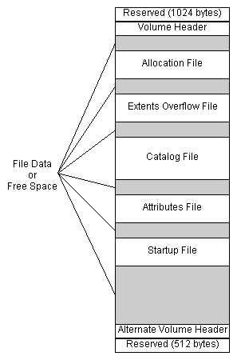
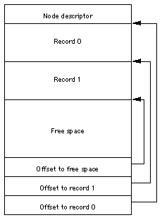
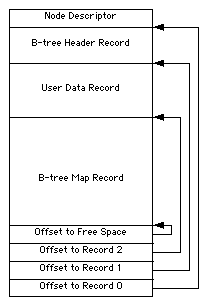
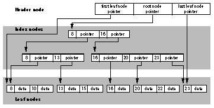
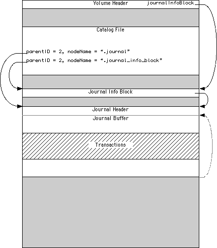
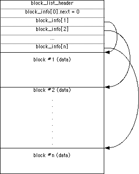
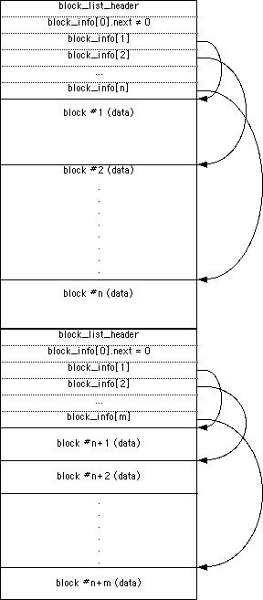

|
|
This Technote
describes the on-disk format for an HFS Plus volume. It does
not describe any programming interfaces for HFS Plus
volumes.
This technote is directed at developers who need to work
with HFS Plus at a very low level, below the abstraction
provided by the File Manager programming interface. This
includes developers of disk recovery utilities and
programmers implementing HFS Plus support on other
platforms.
This technote assumes that you have a conceptual
understanding of the HFS volume format, as described in
Inside
Macintosh: Files.
[Mar 05, 2004]
|
HFS Plus Basics
HFS Plus is a volume format for Mac OS. HFS
Plus was introduced with Mac
OS 8.1. HFS Plus is architecturally very similar to
HFS, although there have been a number of changes. The
following table summarizes the important differences.
Table 1 HFS and HFS Plus Compared
|
Feature
|
HFS
|
HFS Plus
|
Benefit/Comment
|
|
User visible name
|
Mac OS Standard
|
Mac OS Extended
|
|
|
Number of allocation blocks
|
16 bits worth
|
32 bits worth
|
Radical decrease in disk space used on large
volumes, and a larger number of files per volume.
|
|
Long file names
|
31 characters
|
255 characters
|
Obvious user benefit; also improves
cross-platform compatibility
|
|
File name encoding
|
MacRoman
|
Unicode
|
Allows for international-friendly file names,
including mixed script names
|
|
File/folder attributes
|
Support for fixed size attributes (FileInfo and
ExtendedFileInfo)
|
Allows for future meta-data extensions
|
Future systems may use metadata for a richer
Finder experience
|
|
OS startup support
|
System Folder ID
|
Also supports a dedicated startup file
|
May help non-Mac OS systems to boot from HFS
Plus volumes
|
|
catalog node size
|
512 bytes
|
4 KB
|
Maintains efficiency in the face of the other
changes. (This larger catalog node size is due to
the much longer file names [512 bytes as opposed to
32 bytes], and larger catalog records (because of
more/larger fields)).
|
|
Maximum file size
|
231 bytes
|
263 bytes
|
Obvious user benefit, especially for multimedia
content creators. |
The extent to which these HFS Plus features are available
through a programming interface is OS dependent. Mac OS versions
less than 9.0 do not provide programming interfaces for any
HFS Plus-specific features.
To summarize, the key goals that guided the design of the
HFS Plus volume format were:
- efficient use of disk space,
- international-friendly file names,
- future support for named forks, and
- ease booting on non-Mac OS operating systems.
The following sections describes these goals, and the
differences between HFS and HFS Plus required to meet these
goals.
Efficient Use of Disk Space
HFS divides the total space on a volume into equal-sized
pieces called allocation blocks. It uses 16-bit fields to
identify a particular allocation block, so there must be
less than 216 (65,536) allocation blocks on an
HFS volume. The size of an allocation block is typically the
smallest multiple of 512 such that there are less than
65,536 allocation blocks on the volume (i.e., the volume
size divided by 65,535, rounded up to a multiple of 512).
Any non-empty fork must occupy an integral number of
allocation blocks. This means that the amount of space
occupied by a fork is rounded up to a multiple of the
allocation block size. As volumes (and therefore allocation
blocks) get bigger, the amount of allocated but unused space
increases.
HFS Plus uses 32-bit values to identify allocation
blocks. This allows up to 2 32 (4,294,967,296)
allocation blocks on a volume. More allocation blocks means
a smaller allocation block size, especially on volumes of 1
GB or larger, which in turn means less average wasted space
(the fraction of an allocation block at the end of a fork,
where the entire allocation block is not actually used). It
also means you can have more files, since the available
space can be more finely distributed among a larger number
of files. This change is especially beneficial if the volume
contains a large number of small files.
International-Friendly File Names
HFS uses 31-byte strings to store file names. HFS does
not store any kind of script information with the file name
to indicate how it should be interpreted. File names are
compared and sorted using a routine that assumes a Roman
script, wreaking havoc for names that use some other script
(such as Japanese). Worse, this algorithm is buggy, even for
Roman scripts. The Finder and other applications interpret
the file name based on the script system in use at runtime.
|
Note:
The problem with using non-Roman scripts in an HFS
file name is that HFS compares file names in a case-
insensitive fashion. The case-insensitive
comparison algorithm assume a MacRoman encoding.
When presented with non-Roman text, this algorithm
fails in strange ways. The upshot is that HFS
decides that certain non-Roman file names are
duplicates of other file names, even though they
are not duplicates in the source encoding.
|
HFS Plus uses up to 255 Unicode characters to store file
names. Allowing up to 255 characters makes it easier to have
very descriptive names. Long names are especially useful
when the name is computer-generated (such as Java class
names).
The HFS catalog B-tree uses 512-byte nodes. An HFS Plus
file name can occupy up to 512 bytes (including the length
field). Since a B-tree index node must store at least two
keys (plus pointers and node descriptor), the HFS Plus
catalog must use a larger node size. The typical node size
for an HFS Plus catalog B-tree is 4 KB.
In the HFS catalog B-tree, the keys stored in an index
node always occupy a fixed amount of space, the maximum key
size. In HFS Plus, the keys in an index node may occupy a
variable amount of space determined by the actual size of
the key. This allows for less wasted space in index nodes
and creates, on typical disks, a substantially larger
branching factor in the tree (requiring fewer node accesses
to find any given record).
Future Support for Named Forks
Files on an HFS volume have two forks: a data fork and a
resource fork, either of which may be empty (zero length).
Files and directories also contain a small amount of
additional information (known as catalog information or
metadata) such as the modification date or Finder info.
Apple software teams and third-party developers often
need to store information associated with particular files
and directories. In some cases (for example, custom icons for
files), the data or resource fork is appropriate. But in
other cases (for example, custom icons for directories, or File
Sharing access privileges), using the data or resource fork
is not appropriate or not possible.
A number of products have implemented special-purpose
solutions for storing their file- and directory-related
data. But because these are not managed by the file system,
they can become inconsistent with the file and directory
structure.
HFS Plus has an attribute file, another B-tree, that can
be used to store additional information for a file or
directory. Since it is part of the volume format, this
information can be kept with the file or directory as is it
moved or renamed, and can be deleted when the file or
directory is deleted. The contents of the attribute file's
records have not been fully defined yet, but the goal is to
provide an arbitrary number of forks, identified by Unicode
names, for any file or directory.
|
Note:
Because the attributes file has not been fully
defined yet, current implementations are unable to
delete named forks when a file or directory is
deleted. Future implementations that properly
delete named forks will need to check for these
orphaned named forks and delete them when the
volume is mounted. The
lastMountedVersion field of the volume
header can be used to detect when such a check
needs to take place.
Whenever possible, an application should delete
named forks rather than orphan them.
|
Easy Startup of Alternative Operating Systems
HFS Plus defines a special startup file,
an unstructured fork that can be found easily during system
startup. The location and size of the startup file is
described in the volume header.
The startup file is especially useful on systems that don't
have HFS or HFS Plus support in ROM. In many respects, the
startup file is a generalization of the HFS boot blocks, one
that provides a much larger, variable-sized amount of
storage.
Back to top
Core Concepts
HFS Plus uses a number of interrelated structures to
manage the organization of data on the volume. These
structures include:
Each of these complex structures is described in its own
section. The purpose of this section is to give an overview
of the volume format, describe how the structures fit
together, and define the primitive data types used by HFS
Plus.
Terminology
HFS Plus is a specification of how a volume (files
that contain user data, along with the structure to retrieve
that data) exists on a disk (the medium on which user
data is stored). The storage space on a disk is divided into
units called sectors. A sector is the smallest
part of a disk that the disk's driver software will read or write
in a single operation (without having to read or write additional
data before or after the requested data). The size of a sector is
usually based on the way the data is physically laid out on the disk.
For hard disks, sectors are typically 512 bytes. For optical media,
sectors are typically 2048 bytes.
Most of the data structures on an HFS Plus volume do not
depend on the size of a sector, with the exception of the
journal. Because the journal does rely
on accessing individual sectors, the sector size is stored
in the jhdr_size field of the
journal header (if the
volume has a journal).
HFS Plus allocates space in units called allocation
blocks; an allocation block is simply a group of
consecutive bytes. The size (in bytes) of an allocation
block is a power of two, greater than or equal to 512, which
is set when the volume is initialized. This value cannot be
easily changed without reinitializing the volume. Allocation
blocks are identified by a 32-bit allocation block
number, so there can be at most 232
allocation blocks on a volume. Current implementations of the
file system are optimized for 4K allocation blocks.
|
Note:
For the best performance, the allocation block size should
be a multiple of the sector size. If the
volume has an HFS wrapper, the
wrapper's allocation block size and allocation block start
should also be multiples of the sector size to
allow the best performance.
|
All of the volume's structures, including the volume
header, are part of one or more allocation blocks (with the possible
exception of the alternate volume header, discussed
below). This differs from HFS,
which has several structures (including the boot blocks, master
directory block, and bitmap) which are not part of any
allocation block.
To promote file contiguity and avoid
fragmentation, disk space is typically allocated to files in
groups of allocation blocks, or clumps. The clump size
is always a multiple of the allocation block size. The default
clump size is specified in the volume header.
|
IMPORTANT:
The actual algorithm used to extend files is not part
of this specification. The implementation is not
required to act on the clump values in the volume
header; it merely provides space to store those
values.
|
|
Note:
The current non-contiguous algorithm in Mac OS will
begin allocating at the next free block it finds.
It will extend its allocation up to a multiple of
the clump size if there is sufficient free space
contiguous with the end of the requested
allocation. Space is not allocated in contiguous
clump-sized pieces.
|
Every HFS Plus volume must have a volume header.
The volume header contains sundry information about the
volume, such as the date and time of the volume's creation
and the number of files on the volume, as well as the
location of the other key structures on the volume. The
volume header is always located at 1024 bytes from the
start of the volume.
A copy of the volume header, known as the alternate
volume header, is stored starting at 1024 bytes before
the end of the volume. The first 1024 bytes of volume
(before the volume header), and the last 512 bytes of the
volume (after the alternate volume header) are
reserved.
All of the allocation blocks containing the volume header,
alternate volume header, or the reserved areas before the
volume header or after the alternate volume header, are marked
as used in the allocation file.
The actual number of allocation blocks marked this way depends
on the allocation block size.
An HFS Plus volume contains five special files,
which store the file system structures required to access
the file system payload: folders, user files, and
attributes. The special files are the catalog file, the
extents overflow file, the allocation file, the attributes
file and the startup file. Special files only have a single
fork (the data fork) and the extents of that fork are
described in the volume header.
The catalog file is a special file that describes
the folder and file hierarchy on a volume. The catalog file
contains vital information about all the files and folders
on a volume, as well as the catalog information, for
the files and folders that are stored in the catalog file.
The catalog file is organized as a B-tree (or "balanced
tree") to allow quick and efficient searches through a large
folder hierarchy.
The catalog file stores the file and folder names, which
consist of up to 255 Unicode characters, as described
below.
|
Note:
The B-Trees section contains
an in-depth description of the B-trees used by HFS
Plus. |
The attributes file is another special file which
contains additional data for a file or folder. Like the
catalog file, the attributes file is organized as a B-tree.
In the future, it will be used to store information about
additional forks. (This is similar to the way the catalog
file stores information about the data and resource forks of
a file.)
HFS Plus tracks which allocation blocks belong to a fork
by maintaining a list of the fork's extents. An
extent is a contiguous range of allocation blocks
allocated to some fork, represented by a pair of numbers:
the first allocation block number and the number of
allocation blocks. For a user file, the first eight extents
of each fork are stored in the volume's catalog file. Any
additional extents are stored in the extents overflow
file, which is also organized as a B-tree.
The extents overflow file also stores additional extents
for the special files except for the extents overflow file
itself. However, if the startup file requires more than the
eight extents in the Volume Header (and thus requires
additional extents in the extents overflow file), it would
be much harder to access, and defeat the purpose of the
startup file. So, in practice, a startup file should be
allocated such that it doesn't need additional extents in
the extents overflow file.
The allocation file is a special file which
specifies whether an allocation block is used or free. This
performs the same role as the HFS volume bitmap, although
making it a file adds flexibility to the volume format.
The startup file is another special file which
facilitates booting of non-Mac OS computers from HFS Plus
volumes.
Finally, the bad block file prevents the volume
from using certain allocation blocks because the portion of
the media that stores those blocks is defective. The bad
block file is neither a special file nor a user file; this
is merely convention used in the extents overflow file. See
Bad Block File for more details.
Broad Structure
The bulk of an HFS Plus volume consists of seven types of
information or areas:
- user file forks,
- the allocation file (bitmap),
- the catalog file,
- the extents overflow file,
- the attributes file,
- the startup file, and
- unused space.
The general structure of an HFS Plus volume is
illustrated in Figure 1.

Figure 1. Organization of an HFS Plus
Volumes.
The volume header is always at a fixed
location (1024 bytes from the start of the volume).
However, the special files can appear anywhere between
the volume header block and the alternate volume header
block. These files can appear in any order and are not
necessarily contiguous.
The information on HFS Plus volumes (with the possible
exception of the alternate volume header, as discussed
below) is organized solely
in allocation blocks. Allocation blocks are simply a means
of grouping space on the media into convenient parcels.
The size of an allocation block is a power of two,
and at least 512. The allocation block size is a volume
header parameter whose value is set when the volume is
initialized; it cannot be changed easily without
reinitializing the volume.
|
Note:
The allocation block size is a classic
speed-versus- space tradeoff. Increasing the
allocation block size decreases the size of the
allocation file, and often reduces the number of
separate extents that must be manipulated for every
file. It also tends to increase the average size of
a disk I/O, which decreases overhead. Decreasing
the allocation block size reduces the average
number of wasted bytes per file, making more
efficient use of the volume's space.
|
|
WARNING:
While HFS Plus disks with an allocation block size
smaller than 4 KB are legal, DTS recommends that
you always use a minimum 4 KB allocation block
size. Disks with a smaller allocation block size
will be markedly slower when used on systems that
do 4 KB clustered I/O, such as Mac OS X Server.
|
Primitive Data Types
This section describes the primitive data types used on
an HFS Plus volume. All data structures in this volume are
defined in the C language. The specification assumes that
the compiler will not insert any padding fields. Any
necessary padding fields are explicitly declared.
|
IMPORTANT:
The HFS Plus volume format is largely derived from
the HFS volume format. When defining the new
format, it was decided to remove unused fields
(primarily legacy MFS fields) and arrange all the
remaining fields so that similar fields were
grouped together and that all fields had proper
alignment (using PowerPC alignment rules).
|
Reserved and Pad
Fields
In many places this specification describes a field, or
bit within a field, as reserved. This has a definite
meaning, namely:
- When creating a structure with a reserved field, an
implementation must set the field to zero.
- When reading existing structures, an implementation
must ignore any value in the field.
- When modifying a structure with a reserved field, an
implementation must preserve the value of the reserved
field.
This definition allows for backward-compatible
enhancements to the volume format.
Pad fields have exactly the same semantics as a reserved
field. The different name merely reflects the designer's
goals when including the field, not the behavior of the
implementation.
Integer Types
All integer values are defined by one of the following
primitive types: UInt8, SInt8,
UInt16, SInt16,
UInt32, SInt32,
UInt64, and SInt64. These
represent unsigned and signed (2's complement) 8-bit,
16-bit, 32-bit, and 64-bit numbers.
All multi-byte integer values are stored in big-endian
format. That is, the bytes are stored in order from most
significant byte through least significant byte, in
consecutive bytes, at increasing offset from the start of a
block. Bits are numbered from 0 to n-1 (for types
UIntn and SIntn),
with bit 0 being the least significant bit.
HFS Plus Names
File and folder names on HFS Plus consist of up to 255
Unicode characters with a preceding 16-bit length, defined
by the type HFSUniStr255.
struct HFSUniStr255 {
UInt16 length;
UniChar unicode[255];
};
typedef struct HFSUniStr255 HFSUniStr255;
typedef const HFSUniStr255 *ConstHFSUniStr255Param;
|
UniChar is a UInt16 that
represents a character as defined in the Unicode character
set defined by The Unicode Standard, Version 2.0
[Unicode, Inc. ISBN 0-201-48345-9].
HFS Plus stores strings fully decomposed and in canonical
order. HFS Plus compares strings in a case-insensitive
fashion. Strings may contain Unicode characters that must
be ignored by this comparison. For more details on these
subtleties, see Unicode
Subtleties.
A variant of HFS Plus, called HFSX,
allows volumes whose names are compared in a case-sensitive
fashion. The names are fully decomposed and in canonical order,
but no Unicode characters are ignored during the comparison.
Text Encodings
Traditional Mac OS programming interfaces pass filenames as
Pascal strings (either as a StringPtr or as a
Str63 embedded in an FSSpec). The
characters in those strings are not Unicode; the encoding
varies depending on how the system software was localized
and what language kits are installed. Identical sequences of
bytes can represent vastly different Unicode character
sequences. Similarly, many Unicode characters belong to more
than one Mac OS text encoding.
HFS Plus includes two features specifically designed to
help Mac OS handle the conversion between Mac OS-encoded
Pascal strings and Unicode. The first feature is the
textEncoding field of the file and folder
catalog records. This field is defined as a hint to be used
when converting the record's Unicode name back to a Mac OS-
encoded Pascal string.
The valid values for the textEncoding field
are defined in Table 2.
Table 2 Text Encodings
|
Encoding Name
|
Value
|
Encoding Name
|
Value
|
|
MacRoman
|
0
|
MacThai
|
21
|
|
MacJapanese
|
1
|
MacLaotian
|
22
|
|
MacChineseTrad
|
2
|
MacGeorgian
|
23
|
|
MacKorean
|
3
|
MacArmenian
|
24
|
|
MacArabic
|
4
|
MacChineseSimp
|
25
|
|
MacHebrew
|
5
|
MacTibetan
|
26
|
|
MacGreek
|
6
|
MacMongolian
|
27
|
|
MacCyrillic
|
7
|
MacEthiopic
|
28
|
|
MacDevanagari
|
9
|
MacCentralEurRoman
|
29
|
|
MacGurmukhi
|
10
|
MacVietnamese
|
30
|
|
MacGujarati
|
11
|
MacExtArabic
|
31
|
|
MacOriya
|
12
|
MacSymbol
|
33
|
|
MacBengali
|
13
|
MacDingbats
|
34
|
|
MacTamil
|
14
|
MacTurkish
|
35
|
|
MacTelugu
|
15
|
MacCroatian
|
36
|
|
MacKannada
|
16
|
MacIcelandic
|
37
|
|
MacMalayalam
|
17
|
MacRomanian
|
38
|
|
MacSinhalese
|
18
|
MacFarsi
|
140 (49)
|
|
MacBurmese
|
19
|
MacUkrainian
|
152 (48)
|
|
MacKhmer
|
20
|
|
|
|
IMPORTANT:
Non-Mac OS implementations of HFS Plus may choose
to simply ignore the textEncoding
field. In this case, the field must be treated as
a reserved
field.
|
|
Note:
Mac OS uses the textEncoding field in
the following way. When a file or folder is created
or renamed, Mac OS converts the supplied Pascal
string to a HFSUniStr255. It stores
the source text encoding in the
textEncoding field of the catalog
record. When Mac OS needs to create a Pascal string
for that record, it uses the
textEncoding as a hint to the text
conversion process. This hint ensures a high-degree
of round-trip conversion fidelity, which in turn
improves compatibility.
|
The second use of text encodings in HFS Plus is the
encodingsBitmap field of the volume header. For
each encoding used by a catalog node on the volume, the
corresponding bit in the encodingsBitmap field
must be set.
It is acceptable for a bit in this bitmap to be set even
though no names on the volume use that encoding. This means
that when an implementation deletes or renames an object, it
does not have to clear the encoding bit if that was the last
name to use the given encoding.
|
IMPORTANT:
The text encoding value is used as the number of
the bit to set in encodingsBitmap to
indicate that the encoding is used on the volume.
However, encodingsBitmap is only 64
bits long, and thus the text encoding values for
MacFarsi and MacUkrainian cannot be used as bit
numbers. Instead, another bit number (shown in
parenthesis) is used.
|
|
Note:
Mac OS uses the encodingsBitmap field
to determine which text encoding conversion tables
to load when the volume is mounted. Text encoding
conversion tables are large, and loading them
unnecessarily is a waste of memory. Most systems
only use one text encoding, so there is a
substantial benefit to recording which encodings
are required on a volume-by-volume basis.
|
|
WARNING:
Non-Mac OS implementations of HFS Plus must
correctly maintain the encodingsBitmap
field. Specifically, if the implementation sets the
textEncoding field a catalog record to
a text-encoding value, it must ensure that the
corresponding bit is set in
encodingsBitmap to ensure correct
operation when that disk is mounted on a system
running Mac OS.
|
HFS Plus Dates
HFS Plus stores dates in several data structures,
including the volume header and catalog records. These dates
are stored in unsigned 32-bit integers (UInt32)
containing the number of seconds since midnight, January 1,
1904, GMT. This is slightly different from HFS, where the
value represents local time.
The maximum representable date is February 6, 2040 at
06:28:15 GMT.
The date values do not account for leap seconds. They do
include a leap day in every year that is evenly divisible by
four. This is sufficient given that the range of
representable dates does not contain 1900 or 2100, neither
of which have leap days.
The implementation is responsible for converting these
times to the format expected by client software. For
example, the Mac OS File Manager passes dates in local time;
the Mac OS HFS Plus implementation converts dates between
local time and GMT as appropriate.
|
Note:
The creation date stored in
the Volume Header is NOT stored in GMT; it is
stored in local time. The reason for this is that
many applications (including backup utilities) use
the volume's creation date as a relatively unique
identifier. If the date was stored in GMT, and
automatically converted to local time by an
implementation (like Mac OS), the value would
appear to change when the local time zone or
daylight savings time settings change (and thus
cause some applications to improperly identify the
volume). The use of the volume's creation date as a
unique identifier outweighs its use as a date. This
change was introduced late in the Mac OS 8.1
project.
|
HFS Plus Permissions
For each file and folder, HFS Plus maintains a record
containing access permissions, defined by the
HFSPlusBSDInfo structure.
struct HFSPlusBSDInfo {
UInt32 ownerID;
UInt32 groupID;
UInt8 adminFlags;
UInt8 ownerFlags;
UInt16 fileMode;
union {
UInt32 iNodeNum;
UInt32 linkCount;
UInt32 rawDevice;
} special;
};
typedef struct HFSPlusBSDInfo HFSPlusBSDInfo;
|
The fields have the following meaning:
ownerID- The Mac OS X user ID of the owner of the file or folder.
Mac OS X versions prior to 10.3 treats user ID 99 as if it was the user ID of the
user currently logged in to the console. If no user is logged in to the
console, user ID 99 is treated as user ID 0 (root). Mac OS X version 10.3
treats user ID 99 as if it was the user ID of the process making the call
(in effect, making it owned by everyone simultaneously). These substitutions
happen at run time. The actual user ID on disk is not changed.
groupID- The Mac OS X group ID of the group associated with the
file or folder. Mac OS X typically maps group ID 99 to the group
named "unknown." There is no run time substitution of group IDs in Mac OS X.
adminFlags- BSD flags settable by the super-user only. This field
corresponds to bits 16 through 23 of the
st_flags field of
struct stat in Mac OS X. See the
manual page for chflags(2) for more information. The following table
gives the bit position in the adminFlags field and the name of the
corresponding mask used in the st_flags field.
| Bit | st_flags mask | Meaning |
|---|
| 0 | SF_ARCHIVED | File has been archived |
| 1 | SF_IMMUTABLE | File may not be changed |
| 2 | SF_APPEND | Writes to file may only append |
ownerFlags- BSD flags settable by the owner of the file or directory,
or by the super-user. This field corresponds to bits 0 through 7 of the
st_flags field of
struct stat in Mac OS X. See the
manual page for chflags(2) for more information. The following table
gives the bit position in the ownerFlags field and the name of the
corresponding mask used in the st_flags field.
| Bit | st_flags mask | Meaning |
|---|
| 0 | UF_NODUMP | Do not dump (back up or archive) this file |
| 1 | UF_IMMUTABLE | File may not be changed |
| 2 | UF_APPEND | Writes to file may only append |
| 3 | UF_OPAQUE | Directory is opaque (see below) |
fileMode- BSD file type and mode bits. Note that the constants from the header
shown below are in octal (base eight), not hexadecimal.
#define S_ISUID 0004000 /* set user id on execution */
#define S_ISGID 0002000 /* set group id on execution */
#define S_ISTXT 0001000 /* sticky bit */
#define S_IRWXU 0000700 /* RWX mask for owner */
#define S_IRUSR 0000400 /* R for owner */
#define S_IWUSR 0000200 /* W for owner */
#define S_IXUSR 0000100 /* X for owner */
#define S_IRWXG 0000070 /* RWX mask for group */
#define S_IRGRP 0000040 /* R for group */
#define S_IWGRP 0000020 /* W for group */
#define S_IXGRP 0000010 /* X for group */
#define S_IRWXO 0000007 /* RWX mask for other */
#define S_IROTH 0000004 /* R for other */
#define S_IWOTH 0000002 /* W for other */
#define S_IXOTH 0000001 /* X for other */
#define S_IFMT 0170000 /* type of file mask */
#define S_IFIFO 0010000 /* named pipe (fifo) */
#define S_IFCHR 0020000 /* character special */
#define S_IFDIR 0040000 /* directory */
#define S_IFBLK 0060000 /* block special */
#define S_IFREG 0100000 /* regular */
#define S_IFLNK 0120000 /* symbolic link */
#define S_IFSOCK 0140000 /* socket */
#define S_IFWHT 0160000 /* whiteout */
|
In some versions of Unix, the sticky bit, S_ISTXT, is used
to indicate that an executable file's code should remain in memory
after the executable finishes; this can help performance if the same
executable is used again soon. Mac OS X does not use this optimization.
If the sticky bit is set for a directory, then Mac OS X restricts
movement, deletion, and renaming of files in that directory.
Files may be removed or renamed only if the user has write access
to the directory; and is the owner of the file or the directory,
or is the super-user.
special- This field is used only for certain special kinds of files.
For directories, and most files, this field is unused and
reserved. When used,
this field is used as one of the following:
iNodeNum- For hard link files, this field contains the link reference number.
See the Hard Links section for more
information.
linkCount- For indirect node files, this field contains the number of hard links
that point at this indirect node file. See the
Hard Links section for more information.
rawDevice- For block and character special devices files (when the
S_IFMT
field contains S_IFCHR or S_IFBLK), this field
contains the device number.
|
WARNING:
Mac OS 8 and 9 treat the permissions as
reserved.
|
|
Note:
The S_IFWHT and UF_OPAQUE
values are used when the file system is mounted as part
of a union mount. A union mount presents the
combination (union) of several file systems as a single
file system. Conceptually, these file systems are
layered, one on top of another. If a file or directory
appears in multiple layers, the one in the top most
layer is used. All changes are made to the top most
file system only; the others are read-only. To delete a
file or directory that appears in a layer other than the
top layer, a whiteout entry (file type
S_IFWHT) is created in the top layer. If a
directory that appears in a layer other than the top
layer is deleted and later recreated, the contents in
the lower layer must be hidden by setting the
UF_OPAQUE flag in the directory in the top
layer. Both S_IFWHT and
UF_OPAQUE hide corresponding names in lower
layers by preventing a union mount from accessing the
same file or directory name in a lower layer.
|
|
Note:
If the S_IFMT field (upper 4 bits) of the fileMode
field is zero, then Mac OS X assumes that the permissions structure is
uninitialized, and internally uses default values for all of the fields.
The default user and group IDs are 99, but can be changed at the time the
volume is mounted. This default ownerID is then subject to
substitution as described above.
This means that files created by Mac OS 8 and 9, or any other implementation
that sets the permissions fields to zeroes, will behave as if the
"ignore ownership" option is enabled for those files, even if "ignore
ownership" is disabled for the volume as a whole.
|
Fork Data Structure
HFS Plus maintains information about the contents of a
file using the HFSPlusForkData structure. Two
such structures -- one for the resource and one for the data
fork -- are stored in the catalog record for each user file.
In addition, the volume header contains a fork data
structure for each special file.
An unused extent descriptor in an extent record would
have both startBlock and
blockCount set to zero. For example, if a given
fork occupied three extents, then the last five extent
descriptors would be all zeroes.
struct HFSPlusForkData {
UInt64 logicalSize;
UInt32 clumpSize;
UInt32 totalBlocks;
HFSPlusExtentRecord extents;
};
typedef struct HFSPlusForkData HFSPlusForkData;
typedef HFSPlusExtentDescriptor HFSPlusExtentRecord[8];
|
The fields have the following meaning:
logicalSize- The size, in bytes, of the valid data in the fork.
clumpSize- For
HFSPlusForkData structures in the
volume header, this is the fork's
clump size, which is used in preference to the
default clump size in the volume header.
For HFSPlusForkData structures in a
catalog record, this field was intended to store a per-fork
clump size to override the default clump size
in the volume header. However, Apple
implementations prior to Mac OS X version 10.3 ignored this field.
As of Mac OS X version 10.3, this field is used to keep track of the
number of blocks actually read from the fork. See the Hot
Files section for more information.
totalBlocks- The total number of allocation blocks used by all the
extents in this fork.
extents- An array of extent descriptors for the fork. This
array holds the first eight extent descriptors. If more
extent descriptors are required, they are stored in the
extents overflow file.
|
IMPORTANT:
The HFSPlusExtentRecord is also the
data record used in the
extents overflow
file (the extent record).
|
The HFSPlusExtentDescriptor structure is
used to hold information about a specific extent.
struct HFSPlusExtentDescriptor {
UInt32 startBlock;
UInt32 blockCount;
};
typedef struct HFSPlusExtentDescriptor HFSPlusExtentDescriptor;
|
The fields have the following meaning:
startBlock- The first allocation block in the extent.
blockCount- The length, in allocation blocks, of the extent.
Back to top
Volume Header
Each HFS Plus volume contains a volume header
1024 bytes from the start of the volume. The volume
header -- analogous to the master directory block (MDB)
for HFS -- contains information about the volume as a whole,
including the location of other key structures in the volume.
The implementation is responsible for ensuring that this
structure is updated before the volume is unmounted.
A copy of the volume header, the alternate volume header,
is stored starting 1024 bytes before the end of the volume. The
implementation should only update this copy when the length
or location of one of the special files changes. The alternate volume
header is intended for use solely by disk repair utilities.
The first 1024 bytes and the
last 512 bytes of the volume are
reserved.
|
Note:
The first 1024 bytes are reserved for use as boot
blocks; the traditional Mac OS Finder will write to them when
the System Folder changes. The boot block format is
outside the scope of this specification. It is
defined in
Inside
Macintosh: Files.
The last 512 bytes were used during Apple's CPU
manufacturing process.
|
The allocation block (or blocks)
containing the first 1536 bytes (reserved space plus volume header)
are marked as used in the allocation file (see the
Allocation File section).
Also, in order to accommodate the alternate volume header and
the reserved space following it, the last allocation block (or two
allocation blocks, if the volume is formatted with 512-byte
allocation blocks) is also marked as used in the allocation
file.
|
IMPORTANT:
The alternate volume header is always stored at offset
1024 bytes from the end of the volume. If the
disk size is not an even multiple of the allocation
block size, this area may lie beyond the last
allocation block. However, the last allocation
block (or two allocation blocks for a volume
formatted with 512-byte allocation blocks) is still
reserved even if the alternate volume header is not
stored there.
|
The volume header is described by the
HFSPlusVolumeHeader type.
struct HFSPlusVolumeHeader {
UInt16 signature;
UInt16 version;
UInt32 attributes;
UInt32 lastMountedVersion;
UInt32 journalInfoBlock;
UInt32 createDate;
UInt32 modifyDate;
UInt32 backupDate;
UInt32 checkedDate;
UInt32 fileCount;
UInt32 folderCount;
UInt32 blockSize;
UInt32 totalBlocks;
UInt32 freeBlocks;
UInt32 nextAllocation;
UInt32 rsrcClumpSize;
UInt32 dataClumpSize;
HFSCatalogNodeID nextCatalogID;
UInt32 writeCount;
UInt64 encodingsBitmap;
UInt32 finderInfo[8];
HFSPlusForkData allocationFile;
HFSPlusForkData extentsFile;
HFSPlusForkData catalogFile;
HFSPlusForkData attributesFile;
HFSPlusForkData startupFile;
};
typedef struct HFSPlusVolumeHeader HFSPlusVolumeHeader;
|
The fields have the following meaning:
signature- The volume signature, which must be
kHFSPlusSigWord ('H+') for an
HFS Plus volume, or kHFSXSigWord ('HX')
for an HFSX volume.
version- The version of the volume format, which is currently
4 (
kHFSPlusVersion) for HFS Plus volumes, or
5 (kHFSXVersion) for HFSX
volumes.
attributes- Volume attributes, as
described below.
lastMountedVersion- A value which uniquely identifies the implementation
that last mounted this volume for writing. This value can
be used by future implementations to detect volumes that
were last mounted by older implementations and check them
for deficiencies. Any code which modifies the on disk
structures must also set this field to a unique value which
identifies that code. Third-party implementations of HFS
Plus should place a
registered creator
code in this field. The value used by Mac OS 8.1 to
9.2.2 is
'8.10'.
The value used by Mac OS X is '10.0'. The
value used by a journaled volume
(including HFSX) in Mac OS X is 'HFSJ'.
The value used by fsck_hfs on Mac OS X is 'fsck'.
|
Note:
It is very important for implementations (and
utilities that directly modify the volume!) to set
the lastMountedVersion. It is also
important to choose different values when
non-trivial changes are made to an implementation
or utility. If a bug is found in an implementation
or utility, and it sets the
lastMountedVersion correctly, it will
be much easier for other implementations and
utilities to detect and correct any problems.
|
journalInfoBlock- The allocation block number of the allocation block
which contains the
JournalInfoBlock
for this volume's journal. This field is valid only if bit
kHFSVolumeJournaledBit is set in the
attribute field; otherwise, this field is
reserved.
createDate- The date and time when the volume was created. See
HFS Plus Dates for a
description of the format.
modifyDate- The date and time when the volume was last modified.
See HFS Plus Dates for a
description of the format.
backupDate- The date and time when the volume was last backed up.
The volume format requires no special action on this
field; it simply defines the field for the benefit of
user programs. See HFS Plus
Dates for a description of the format.
checkedDate- The date and time when the volume was last checked
for consistency. Disk checking tools, such as Disk First
Aid, must set this when they perform a disk check. A disk
checking tool may use this date to perform periodic
checking of a volume.
fileCount- The total number of files on the volume. The
fileCount field does not include the special
files. It should equal the number of file records found
in the catalog file.
folderCount- The total number of folders on the volume.
The
folderCount field does not include the
root folder. It should equal the number of folder records
in the catalog file, minus one (since the root folder has
a folder record in the catalog file).
blockSize- The allocation block size, in bytes.
totalBlocks- The total number of allocation blocks on the disk.
For a disk whose size is an even
multiple of the allocation block size, all areas
on the disk are included in an allocation block,
including the volume header and alternate volume header.
For a disk whose size is not an
even multiple of the allocation block size, only the
allocation blocks that will fit entirely on the disk are
counted here. The remaining space at the end of the
disk is not used by the volume format (except for storing
the alternate volume header, as described above).
freeBlocks- The total number of unused allocation blocks on the
disk.
nextAllocation- Start of next allocation search. The
nextAllocation field is used by Mac OS as a
hint for where to start searching for free allocation blocks
when allocating space for a file. It contains the allocation
block number where the search should begin. An
implementation that doesn't want to use this kind of hint
can just treat the field as reserved. [Implementation
details: traditional Mac OS implementations typically
set it to the first allocation block of the extent most
recently allocated. It is not set to the allocation block
immediately following the most recently allocated extent
because of the likelihood of that extent being shortened
when the file is closed (since a whole clump may have been allocated but not
actually used).] See Allocation
File section for details.
rsrcClumpSize- The default clump
size for resource forks, in bytes. This is a hint to the
implementation as to the size by which a growing file should
be extended. All Apple implementations to date ignore the
rsrcClumpSize and use
dataClumpSize for both data and resource
forks.
dataClumpSize- The default clump
size for data forks, in bytes. This is a hint to the
implementation as to the size by which a growing file should
be extended. All Apple implementations to date ignore the
rsrcClumpSize and use
dataClumpSize for both data and resource
forks.
nextCatalogID- The next unused catalog ID. See
Catalog File for a description
of catalog IDs.
writeCount- This field is incremented every time a volume is
mounted. This allows an implementation to keep the volume
mounted even when the media is ejected (or otherwise
inaccessible). When the media is re-inserted, the
implementation can check this field to determine when the
media has been changed while it was ejected. It is very
important that an implementation or utility change the
writeCount field if it modifies the volume's
structures directly. This is particularly important if it
adds or deletes items on the volume.
encodingsBitmap- This field keeps track of the text encodings used in
the file and folder names on the volume. This bitmap
enables some performance optimizations for
implementations that don't use Unicode names directly.
See the Text Encoding
sections for details.
finderInfo-
This array of 32-bit items contains information used by the Mac OS
Finder, and the system software boot process.
finderInfo[0] contains the directory ID of the
directory containing the bootable system (for example, the
System Folder in Mac OS 8 or 9, or /System/Library/CoreServices
in Mac OS X). It is zero if there is no bootable system on the volume.
This value is typically equal to either finderInfo[3]
or finderInfo[5].
finderInfo[1] contains the parent directory ID of
the startup application (for example, Finder), or zero if the volume
is not bootable.
finderInfo[2] contains the directory ID of a directory
whose window should be displayed in the Finder when the volume is
mounted, or zero if no directory window should be opened. In
traditional Mac OS, this is the first in a linked list of windows
to open; the frOpenChain field of the directory's
Finder Info contains the next directory ID
in the list. The open window list is deprecated. The Mac OS X
Finder will open this directory's window, but ignores the rest
of the open window list. The Mac OS X Finder does not modify
this field.
finderInfo[3] contains the directory ID of a bootable
Mac OS 8 or 9 System Folder, or zero if there isn't one.
finderInfo[4] is reserved.
finderInfo[5] contains the directory ID of a bootable
Mac OS X system (the /System/Library/CoreServices
directory), or zero if there is no bootable Mac OS X system on
the volume.
finderInfo[6] and finderInfo[7] are
used by Mac OS X to contain a 64-bit unique volume identifier.
One use of this identifier is for tracking whether a given
volume's ownership (user ID) information should be honored.
These elements may be zero if no such identifier has been
created for the volume.
allocationFile- Information about the location and size of the
allocation file. See Fork
Data Structure for a description of the
HFSPlusForkData type.
extentsFile- Information about the location and size of the
extents file. See Fork Data
Structure for a description of the
HFSPlusForkData type.
catalogFile- Information about the location and size of the
catalog file. See Fork Data
Structure for a description of the
HFSPlusForkData type.
attributesFile- Information about the location and size of the
attributes file. See Fork
Data Structure for a description of the
HFSPlusForkData type.
startupFile- Information about the location and size of the
startup file. See Fork Data
Structure for a description of the
HFSPlusForkData type.
Volume Attributes
The attributes field of a volume header is
treated as a set of one-bit flags. The definition of the
bits is given by the constants listed below.
enum {
/* Bits 0-6 are reserved */
kHFSVolumeHardwareLockBit = 7,
kHFSVolumeUnmountedBit = 8,
kHFSVolumeSparedBlocksBit = 9,
kHFSVolumeNoCacheRequiredBit = 10,
kHFSBootVolumeInconsistentBit = 11,
kHFSCatalogNodeIDsReusedBit = 12,
kHFSVolumeJournaledBit = 13,
/* Bit 14 is reserved */
kHFSVolumeSoftwareLockBit = 15
/* Bits 16-31 are reserved */
};
|
The bits have the following meaning:
- bits 0-7
- An implementation must treat these as
reserved fields.
kHFSVolumeUnmountedBit (bit 8)- This bit is set if the volume was correctly flushed
before being unmounted or ejected. An implementation must
clear this bit on the media when it mounts a volume for
writing. An implementation must set this bit on the media
as the last step of unmounting a writable volume, after
all other volume information has been flushed. If an
implementation is asked to mount a volume where this bit
is clear, it must assume the volume is inconsistent, and
do appropriate
consistency
checking before using the volume.
kHFSVolumeSparedBlocksBit (bit 9)- This bit is set if there are any records in the
extents overflow file for bad blocks (belonging to file
ID
kHFSBadBlockFileID). See
Bad Block File for details.
kHFSVolumeNoCacheRequiredBit (bit 10)- This bit is set if the blocks from this volume should
not be cached. For example, a RAM or ROM disk is actually
stored in memory, so using additional memory to cache the
volume's contents would be wasteful.
kHFSBootVolumeInconsistentBit (bit 11)- This bit is similar to
kHFSVolumeUnmountedBit, but inverted in
meaning. An implementation must set this bit on the media
when it mounts a volume for writing. An implementation
must clear this bit on the media as the last step of
unmounting a writable volume, after all other volume
information has been flushed. If an implementation is
asked to mount a volume where this bit is set, it must
assume the volume is inconsistent, and do appropriate
consistency
checking before using the volume.
kHFSCatalogNodeIDsReusedBit (bit 12)- This bit is set when the
nextCatalogID
field overflows 32 bits, forcing smaller catalog node IDs to be reused. When this
bit is set, it is common (and not an error) for catalog
records to exist with IDs greater than or equal to
nextCatalogID. If this bit is set, you must
ensure that IDs assigned to newly created catalog records do
not conflict with IDs used by existing records.
kHFSVolumeJournaledBit (bit 13)- If this bit is set, the volume has a
journal, which can be located using the
journalInfoBlock
field of the Volume Header.
- bit 14
- An implementation must treat this bit as
reserved.
kHFSVolumeSoftwareLockBit (bit 15)- This bit is set if the volume is write-protected due
to a software setting. Any implementations must refuse to
write to a volume with this bit set. This flag is
especially useful for write-protecting a volume on a
media that cannot be write-protected otherwise, or for
protecting an individual partition on a partitioned
device.
- bits 16-31
- An implementation must treat these bits as
reserved.
|
Note:
Mac OS X versions 10.0 to 10.3 don't properly honor
kHFSVolumeSoftwareLockBit. They incorrectly
allow such volumes to be modified. This bug is expected
to be fixed in a future version of Mac OS X. (r. 3507614)
|
|
Note:
An implementation may keep a copy of the attributes
in memory and use bits 0-7 for its own runtime
flags. As an example, Mac OS uses bit 7,
kHFSVolumeHardwareLockBit, to indicate
that the volume is write-protected due to some
hardware setting.
|
|
Note:
The existence of two volume consistency bits
(kHFSVolumeUnmountedBit and
kHFSBootVolumeInconsistentBit)
deserves an explanation. Macintosh ROMs check the
consistency of a boot volume if
kHFSVolumeUnmountedBit is clear. The
ROM-based check is very slow, annoyingly so. This
checking code was significantly optimized in Mac OS
7.6. To prevent the ROM check from being used, Mac
OS 7.6 (and higher) leaves the original consistency
check bit (kHFSVolumeUnmountedBit) set
at all times. Instead, an alternative flag
(kHFSBootVolumeInconsistentBit) is
used to signal that the disk needs a consistency
check.
|
|
Note:
For the boot volume, the
kHFSBootVolumeInconsistentBit should
be used as described but
kHFSVolumeUnmountedBit should remain
set; for all other volumes, use the
kHFSVolumeUnmountedBit as described
but keep the
kHFSBootVolumeInconsistentBit clear.
This is an optimization that prevents the Mac OS
ROM from doing a very slow consistency check when
the boot volume is mounted since it only checks
kHFSVolumeUnmountedBit, and won't do a
consistency check; later on, the File Manager will
see the kHFSBootVolumeInconsistentBit
set and do a better, faster consistency check. (It
would be OK to always use both bits at the expense
of a slower Mac OS boot.)
|
Back to top
B-Trees
|
Note:
For a practical description of the algorithms used
to maintain a B-tree, seeAlgorithms in
C, Robert Sedgewick, Addison-Wesley, 1992.
ISBN: 0201514257.
Many textbooks describe B-trees in which an
index node contains N keys and N+1 pointers, and
where keys less than key #X lie in the subtree
pointed to by pointer #X, and keys greater than key
#X lie in the subtree pointed to by pointer #X+1.
(The B-tree implementor defines whether to use
pointer #X or #X+1 for equal keys.)
HFS and HFS Plus are slightly different; in a
given subtree, there are no keys less than the
first key of that subtree's root node.
|
This section describes the B-tree structure used for the
catalog, extents overflow, and attributes files. A B-tree is
stored in file data fork. Each B-tree has a
HFSPlusForkData
structure in the volume header that describes the size and
initial extents of that data fork.
|
Note:
Special files do not have a resource fork because
there is no place to store its
HFSPlusForkData in the volume header.
However, it's still important that the B-tree is in
the data fork because the fork is part of the key
used to store B-tree extents in the extents
overflow file.
|
A B-tree file is divided up into fixed-size nodes,
each of which contains records, which consist of a
key and some data. The purpose of the B-tree is to
efficiently map a key into its corresponding data. To
achieve this, keys must be ordered, that is, there must be a
well-defined way to decide whether one key is smaller than,
equal to, or larger than another key.
The node size (which is expressed in bytes) must
be power of two, from 512 through 32,768, inclusive. The
node size of a B-tree is determined when the B-tree is
created. The logical length of a B-tree file is just the
number of nodes times the node size.
There are four kinds of nodes.
- Each B-tree contains a single header node. The
header node is always the first node in the B-tree. It
contains the information needed to find other any other
node in the tree.
- Map nodes contain map records, which
hold any allocation data (a bitmap that describes the
free nodes in the B-tree) that overflows the map record
in the header node.
- Index nodes hold pointer records that
determine the structure of the B-tree.
- Leaf nodes hold data records that
contain the data associated with a given key. The key for
each data record must be unique.
All nodes share a common structure, described in the next
section.
Node Structure
Nodes are indicated by number. The node's number can be
calculated by dividing its offset into the file by the node
size. Each node has the same general structure, consisting
of three main parts: a node descriptor at the beginning of
the node, a list of record offsets at the end of the node,
and a list of records. This structure is depicted in Figure
2.

Figure 2. The structure of a node.
The node descriptor contains basic information
about the node as well as forward and backward links to
other nodes. The BTNodeDescriptor data type
describes this structure.
struct BTNodeDescriptor {
UInt32 fLink;
UInt32 bLink;
SInt8 kind;
UInt8 height;
UInt16 numRecords;
UInt16 reserved;
};
typedef struct BTNodeDescriptor BTNodeDescriptor;
|
The fields have the following meaning:
fLink- The node number of the next node of this type, or 0
if this is the last node.
bLink- The node number of the previous node of this type, or
0 if this is the first node.
kind- The type of this node. There are four node kinds,
defined by the constants listed below.
height- The level, or depth, of this node in the B-tree
hierarchy. For the header node, this field must be zero.
For leaf nodes, this field must be one. For index nodes,
this field is one greater than the height of the child
nodes it points to. The height of a map node is zero,
just like for a header node. (Think of map nodes as
extensions of the map record in the header node.)
numRecords- The number of records contained in this node.
reserved- An implementation must treat this as a
reserved field.
A node descriptor is always 14 (which is
sizeof(BTNodeDescriptor)) bytes long, so the
list of records contained in a node always starts 14
bytes from the start of the node. The size of each record
can vary, depending on the record's type and the amount of
information it contains.
The records are accessed using the list of record
offsets at the end of the node. Each entry in this list
is a UInt16 which contains the offset, in
bytes, from the start of the node to the start of the
record. The offsets are stored in reverse order, with the
offset for the first record in the last two bytes of the
node, the offset for the second record is in the previous
two bytes, and so on. Since the first record is always at
offset 14, the last two bytes of the node contain the value
14.
|
IMPORTANT:
The list of record offsets always contains one more
entry than there is records in the node. This entry
contains the offset to the first byte of free space
in the node, and thus indicates the size of the
last record in the node. If there is no free space
in the node, the entry contains its own byte offset
from the start of the node.
|
The kind field of the node descriptor
describes the type of a node, which indicates what kinds of
records it contains and, therefore, its purpose in the
B-tree hierarchy. There are four kinds of node types given
by the following constants:
enum {
kBTLeafNode = -1,
kBTIndexNode = 0,
kBTHeaderNode = 1,
kBTMapNode = 2
};
|
It's important to realise that the B-tree node type
determines the type of records found in the node. Leaf nodes
always contain data records. Index nodes always contain
pointer records. Map nodes always contain map records. The
header node always contains a header record, a reserved
record, and a map record. The four node types and their
corresponding records are described in the subsequent
sections.
Header Nodes
The first node (node 0) in every B-tree file
is a header node, which contains essential information about
the entire B-tree file. There are three records in the header
node. The first record is the B-tree header record. The second
record is the user data record and is always 128 bytes long.
The last record is the B-tree map record; it occupies all of
the remaining space between the user data record and the record
offsets. The header node is shown in Figure 3.

Figure 3 Header node structure
The fLink field of the header node's node
descriptor contains the node number of the first map node,
or 0 if there are no map nodes. The bLink field
of the header node's node descriptor must be set to zero.
Header Record
The B-tree header record contains general
information about the B-tree such as its size, maximum key
length, and the location of the first and last leaf nodes.
The data type BTHeaderRec describes the
structure of a header record.
struct BTHeaderRec {
UInt16 treeDepth;
UInt32 rootNode;
UInt32 leafRecords;
UInt32 firstLeafNode;
UInt32 lastLeafNode;
UInt16 nodeSize;
UInt16 maxKeyLength;
UInt32 totalNodes;
UInt32 freeNodes;
UInt16 reserved1;
UInt32 clumpSize; // misaligned
UInt8 btreeType;
UInt8 keyCompareType;
UInt32 attributes; // long aligned again
UInt32 reserved3[16];
};
typedef struct BTHeaderRec BTHeaderRec;
|
|
Note:
The root node can be a leaf node (in the case where
there is only a single leaf node, and therefore no
index nodes, as might happen with the catalog file
on a newly initialized volume). If a tree has no
leaf nodes (like the extents overflow file on a
newly initialized volume), the
firstLeafNode,
lastLeafNode, and
rootNode fields will all be zero. If
there is only one leaf node (as may be the case
with the catalog file on a newly initialized
volume), firstLeafNode,
lastLeafNode, and
rootNode will all have the same value
(i.e., the node number of the sole leaf node). The
firstLeafNode and
lastLeafNode fields just make it easy
to walk through all the leaf nodes by just
following fLink/bLink fields.
|
The fields have the following meaning:
treeDepth- The current depth of the B-tree. Always equal to the
height field of the root node.
rootNode- The node number of the root node, the index node that
acts as the root of the B-tree. See
Index Nodes for details. There
is a possibility that the
rootNode is a leaf
node. See Inside
Macintosh: Files, pp. 2-69 for details.
leafRecords- The total number of records contained in all of the
leaf nodes.
firstLeafNode- The node number of the first leaf node. This may be
zero if there are no leaf nodes.
lastLeafNode- The node number of the last leaf node. This may be
zero if there are no leaf nodes.
nodeSize- The size, in bytes, of a node. This is a power of
two, from 512 through 32,768, inclusive.
maxKeyLength- The maximum length of a key in an index or leaf node.
HFSVolumes.h has the
maxKeyLength values for
the catalog and extents files for both HFS and HFS Plus
(kHFSPlusExtentKeyMaximumLength,
kHFSExtentKeyMaximumLength,
kHFSPlusCatalogKeyMaximumLength,
kHFSCatalogKeyMaximumLength). The maximum
key length for the attributes B-tree will probably be a
little larger than for the catalog file. In general,
maxKeyLength has to be small enough
(compared to nodeSize) so that a single node
can fit two keys of maximum size plus the node descriptor
and offsets.
totalNodes- The total number of nodes (be they free or used) in
the B-tree. The length of the B-tree file is this value
times the
nodeSize.
freeNodes- The number of unused nodes in the B-tree.
reserved1- An implementation must treat this as a
reserved field.
clumpSize- Ignored for HFS Plus B-trees. The
clumpSize field of the
HFSPlusForkData
record is used instead. For maximum compatibility, an
implementation should probably set the
clumpSize in the node descriptor to the same
value as the clumpSize in the
HFSPlusForkData when initializing a volume.
Otherwise, it should treat the header records's
clumpSize as reserved.
btreeType- The value stored in this field is of type
BTreeTypes:
enum BTreeTypes{
kHFSBTreeType = 0, // control file
kUserBTreeType = 128, // user btree type starts from 128
kReservedBTreeType = 255
};
|
This field must be equal to kHFSBTreeType
for the catalog, extents, and attributes B-trees. This field
must be equal to kUserBTreeType for the hot file B-tree. Historically, values of
1 to 127 and kReservedBTreeType were used in
B-trees used by system software in Mac OS 9 and earlier.
keyCompareType- For HFSX volumes, this field in the
catalog B-tree header defines the ordering of the keys (whether
the volume is case-sensitive or case-insensitive). In all
other cases, an implementation must treat this as a
reserved field.
| Constant name | Value | Meaning |
|---|
kHFSCaseFolding | 0xCF | Case folding (case-insensitive) |
kHFSBinaryCompare | 0xBC | Binary compare (case-sensitive) |
attributes- A set of bits used to describe various attributes of
the B-tree. The meaning of these bits is given below.
reserved3- An implementation must treat this as a
reserved field.
The following constants define the various bits that may
be set in the attributes field of the header
record.
enum {
kBTBadCloseMask = 0x00000001,
kBTBigKeysMask = 0x00000002,
kBTVariableIndexKeysMask = 0x00000004
};
|
The bits have the following meaning:
kBTBadCloseMask- This bit indicates that the B-tree was not closed
properly and should be checked for consistency. This bit
is not used for HFS Plus B-trees. An implementation must
treat this as
reserved.
kBTBigKeysMask- If this bit is set, the
keyLength field
of the keys in index and leaf nodes is
UInt16; otherwise, it is a
UInt8. This bit must be set for all HFS Plus
B-trees.
kBTVariableIndexKeysMask- If this bit is set, the keys in index nodes occupy
the number of bytes indicated by their
keyLength field; otherwise, the keys in
index nodes always occupy maxKeyLength
bytes. This bit must be set for the HFS Plus Catalog
B-tree, and cleared for the HFS Plus Extents B-tree.
Bits not specified here must be treated as
reserved.
User Data Record
The second record in a header node is always 128 bytes long.
It provides a small space to store information associated with
a B-tree.
In the HFS Plus catalog, extents, and attributes B-trees, this record is
unused and reserved. In
the HFS Plus hot file B-tree, this
record contains general information about the hot file
recording process.
Map Record
The remaining space in the header node is occupied by a
third record, the map record. It is a bitmap that
indicates which nodes in the B-tree are used and which are
free. The bits are interpreted in the same way as the bits
in the allocation file.
All tolled, the node descriptor, header record, reserved
record, and record offsets occupy 256 bytes of the header
node. So the size of the map record (in bytes) is
nodeSize minus 256. If there are more nodes in
the B-tree than can be represented by the map record in the
header node, map nodes are used to store additional
allocation data.
Map Nodes
If the map record of the header node is not large enough
to represent all of the nodes in the B-tree, map
nodes are used to store the remaining allocation data.
In this case, the fLink field of the header
node's node descriptor contains the node number of the first
map node.
A map node consists of the node descriptor and a single
map record. The map record is a continuation of the map
record contained in the header node. The size of the map
record is the size of the node, minus the size of the node
descriptor (14 bytes), minus the size of two offsets (4
bytes), minus two bytes of free space. That is, the size of
the map record is the size of the node minus 20 bytes; this
keeps the length of the map record an even multiple of 4
bytes. Note that the start of the map record is not
aligned to a 4-byte boundary: it starts immediately after
the node descriptor (at an offset of 14 bytes).
The B-tree uses as many map nodes as needed to provide
allocation data for all of the nodes in the B-tree. The map
nodes are chained through the fLink fields of
their node descriptors, starting with the header node. The
fLink field of the last map node's node
descriptor is zero. The bLink field is not used
for map nodes and must be set to zero for all map nodes.
|
Note:
Not using the bLink field is
consistent with the HFS volume format, but not
really consistent with the overall design.
|
Keyed Records
The records in index and leaf nodes share a common
structure. They contain a keyLength, followed
by the key itself, followed by the record data.
The first part of the record, keyLength, is
either a UInt8 or a UInt16,
depending on the attributes field in the
B-tree's header record. If the kBTBigKeysMask
bit is set in attributes, the
keyLength is a UInt16; otherwise,
it's a UInt8. The length of the key, as stored
in this field, does not include the size of the
keyLength field itself.
|
IMPORTANT:
All HFS Plus B-trees use a UInt16 for
their key length.
|
Immediately following the keyLength is the
key itself. The length of the key is determined by the node
type and the B-tree attributes. In leaf nodes, the length is
always determined by keyLength. In index nodes,
the length depends on the value of the
kBTVariableIndexKeysMask bit in the B-tree
attributes in the header record.
If the bit is clear, the key occupies a constant number of
bytes, determined by the maxKeyLength field of
the B-tree header record. If the bit is set, the key length
is determined by the keyLength field of the
keyed record.
Following the key is the record's data. The format of
this data depends on the node type, as explained in the next
two sections. However, the data is always aligned on a
two-byte boundary and occupies an even number of bytes. To
meet the first alignment requirement, a pad byte must be
inserted between the key and the data if the size of the
keyLength field plus the size of the key is
odd. To meet the second alignment requirement, a pad byte
must be added after the data if the data size is odd.
Index Nodes
The records in an index node are called pointer
records. They contain a keyLength, a key,
and a node number, expressed a UInt32. The node
whose number is in a pointer record is called a child
node of the index node. An index node has two or more
children, depending on the size of the node and the size of
the keys in the node.
|
Note:
A root node does not need to exist (if the tree is
empty). And even if one does exist, it need not
be an index node (i.e., it could be a leaf node
if all the records fit in a single node).
|
Leaf Nodes
The bottom level of a B-tree is occupied exclusively by
leaf nodes, which contain data records instead
of pointer records. The data records contain a
keyLength, a key, and the data associated with
that key. The data may be of variable length.
In an HFS Plus B-tree, the data in the data record is the
HFS Plus volume structure (such as a
CatalogRecord, ExtentRecord, or
AttributeRecord) associated with the key.
Searching for
Keyed Records
A B-tree is highly structured to allow for efficient
searching, insertion, and removal. This structure primarily
affects the keyed records (pointer records and data records)
and the nodes in which they are stored (index nodes and leaf
nodes). The following are the ordering requirements for
index and leaf nodes:
- Keyed records must be placed in a node such that
their keys are in ascending order.
- All the nodes in a given level (whose
height field is the same) must be chained
via their fLink and bLink
field. The node with the smallest keys must be first in
the chain and its bLink field must be zero.
The node with the largest keys must be last in the chain
and its fLink field must be zero.
- For any given node, all the keys in the node must be
less than all the keys in the next node in the chain
(pointed to by
fLink). Similarly, all the
keys in the node must be greater than all the keys in the
previous node in the chain (pointed to by
bLink).
Keeping the keys ordered in this way makes it possible to
quickly search the B-tree to find the data associated with a
given key. Figure 4 shows a sample B-tree containing
hypothetical keys (in this case, the keys are simply
integers).
When an implementation needs to find the data associated
with a particular search key, it begins searching at
the root node. Starting with the first record, it searches
for the record with the greatest key that is less than or
equal to the search key. In then moves to the child node
(typically an index node) and repeats the same process.
This process continues until a leaf node is reached. If
the key found in the leaf node is equal to the search key,
the found record contains the desired data associated with
the search key. If the found key is not equal to the search
key, the search key is not present in the B-tree.
Figure 4. A sample B-Tree
HFS and HFS Plus B-Trees Compared
The structure of the B-trees on an HFS Plus volume is a
closely related to the
B-tree
structure used on an HFS volume. There are three
principal differences: the size of nodes, the size of keys
within index nodes, and the size of a key length (UInt8 vs.
UInt16).
Node Sizes
In an HFS B-tree, nodes always have a fixed size of 512
bytes.
In an HFS Plus B-tree, the node size is determined by a
field (nodeSize) in the header node. The node
size must be a power from 512 through 32,768. An
implementation must use the nodeSize field to
determine the actual node size.
|
Note:
The header node is always located at the start of
the B-tree, so you can find it without knowing the
B-tree node size.
|
HFS Plus uses the following default node sizes:
- 4 KB (8KB in Mac OS X) for the catalog file
- 1 KB (4KB in Mac OS X) for the extents overflow file
- 4 KB for the attributes file
These sizes are set when the volume is initialized and
cannot be easily changed. It is legal to initialize an HFS
Plus volume with different node sizes, but the node sizes
must be large enough for an index node to contain two keys
of maximum size (plus the other overhead such as a node
descriptor, record offsets, and pointers to children).
|
IMPORTANT:
The node size of the catalog file must be at least
kHFSPlusCatalogMinNodeSize (4096).
|
|
IMPORTANT:
The node size of the attributes file must be at
least kHFSPlusAttrMinNodeSize (4096).
|
Key Size in an Index Node
In an HFS B-tree, all of the keys in an index node occupy
a fixed amount of space: the maximum key length for that
B-tree. This simplifies the algorithms for inserting and
deleting records because, within an index node, one key can
be replaced by another key without worrying whether there is
adequate room for the new key. However, it is also somewhat
wasteful when the keys are variable length (such as in the
catalog file, where the key length varies with the length of
the file name).
In an HFS Plus B-tree, the keys in an index node are
allowed to vary in size. This complicates the algorithms for
inserting and deleting records, but reduces wasted space
when the length of a key can vary (such as in the catalog
file). It also means that the number of keys in an index
node will vary with the actual size of the keys.
Back to top
Catalog File
HFS Plus uses a catalog file to maintain information
about the hierarchy of files and folders on a volume. A
catalog file is organized as a B-tree
file, and hence consists of a header node, index nodes, leaf
nodes, and (if necessary) map nodes. The location of the
first extent of the catalog file (and hence of the file's
header node) is stored in the volume header. From the
catalog file's header node, an implementation can obtain the
node number of the root node of the B-tree. From the root
node, an implementation can search the B-tree for keys, as
described in the
previous section.
The B-Trees chapter defined a standard rule for the
node size of HFS Plus B-trees. As
the catalog file is a B-tree, it inherits the requirements
of this rule. In addition, the node size of the catalog file
must be at least 4 KB
(kHFSPlusCatalogMinNodeSize).
Each file or folder in the catalog file is assigned a
unique catalog node ID (CNID). For folders, the CNID is the
folder ID, sometimes called a directory ID, or dirID;
for files, it's the file ID. For any given file or
folder, the parent ID is the CNID of the folder containing
the file or folder, known as the parent folder.
The catalog node ID is defined by the
CatalogNodeID data type.
typedef UInt32 HFSCatalogNodeID;
|
The first 16 CNIDs are reserved for use by Apple
Computer, Inc., and include the following standard
assignments:
enum {
kHFSRootParentID = 1,
kHFSRootFolderID = 2,
kHFSExtentsFileID = 3,
kHFSCatalogFileID = 4,
kHFSBadBlockFileID = 5,
kHFSAllocationFileID = 6,
kHFSStartupFileID = 7,
kHFSAttributesFileID = 8,
kHFSRepairCatalogFileID = 14,
kHFSBogusExtentFileID = 15,
kHFSFirstUserCatalogNodeID = 16
};
|
These constants have the following meaning:
kHFSRootParentID- Parent ID of the root folder.
kHFSRootFolderID- Folder ID of the root folder.
kHFSExtentsFileID- File ID of the extents
overflow file.
kHFSCatalogFileID- File ID of the catalog
file.
kHFSBadBlockFileID- File ID of the bad block
file. The bad block file is not a file in the same
sense as a special file and a user file. See
Bad Block File for details.
kHFSAllocationFileID- File ID of the allocation
file (introduced with HFS Plus).
kHFSStartupFileID- File ID of the startup
file (introduced with HFS Plus).
kHFSAttributesFileID- File ID of the attributes
file (introduced with HFS Plus).
kHFSRepairCatalogFileID- Used temporarily by
fsck_hfs when
rebuilding the catalog file.
kHFSBogusExtentFileID- Used temporarily during
ExchangeFiles
operations.
kHFSFirstUserCatalogNodeID- First CNID available for use by user files and
folders.
In addition, the CNID of zero is never used and serves as
a nil value.
Typically, CNIDs are allocated sequentially, starting at
kHFSFirstUserCatalogNodeID. Versions of the HFS
Plus specification prior to Jan. 18, 2000, required the
nextCatalogID field of the volume header to be greater than the
largest CNID used on the volume (so that an implementation
could use nextCatalogID to determine the CNID to
assign to a newly created file or directory). However, this
can be a problem for volumes that create files or directories
at a high rate (for example, a busy server), since they might
run out of CNID values.
HFS Plus volumes now allow CNID values to wrap around and be
reused. The kHFSCatalogNodeIDsReusedBit in the
attributes field of the
volume header is set to indicate when CNID values have
wrapped around and been reused. When
kHFSCatalogNodeIDsReusedBit is set, the
nextCatalogID field is no longer required to be
greater than any existing CNID.
When kHFSCatalogNodeIDsReusedBit is set,
nextCatalogID may still be used as a hint for the
CNID to assign to newly created files or directories, but the
implementation must verify that CNID is not currently in use
(and pick another value if it is in use). When CNID number
nextCatalogID is already in use, an implementation
could just increment nextCatalogID until it finds
a CNID that is not in use. If nextCatalogID
overflows to zero, kHFSCatalogNodeIDsReusedBit
must be set and nextCatalogID set to
kHFSFirstUserCatalogNodeID (to avoid using any
reserved CNID values).
|
Note:
Mac OS X versions 10.2 and later, and all versions
of Mac OS 9 support
kHFSCatalogNodeIDsReusedBit.
|
As the catalog file is a B-tree file, it inherits its
basic structure from the definition in
B-Trees. Beyond that, you need to know
only two things about an HFS Plus catalog file to interpret
its data:
- the format of the key used both in index and leaf
nodes, and
- the format of the leaf node data records (file,
folder, and thread records).
Catalog File Key
For a given file, folder, or thread record, the catalog file
key consists of the parent folder's CNID
and the name of the file or folder. This structure is described
using the HFSPlusCatalogKey type.
struct HFSPlusCatalogKey {
UInt16 keyLength;
HFSCatalogNodeID parentID;
HFSUniStr255 nodeName;
};
typedef struct HFSPlusCatalogKey HFSPlusCatalogKey;
|
The fields have the following meaning:
keyLength- The
keyLength field is required by all
keyed records in a B-tree.
The catalog file, in common with all HFS Plus B-trees,
uses a large key length (UInt16).
parentID- For file and folder records, this is the folder
containing the file or folder represented by the record. For
thread records, this is the CNID of the
file or folder itself.
nodeName- This field contains Unicode characters,
fully decomposed and in
canonical order. For file or folder records, this is
the name of the file or folder inside the
parentID
folder. For thread records, this is the empty string.
|
IMPORTANT:
The length of the key varies with the length of the
string stored in the nodeName field;
it occupies only the number of bytes required to
hold the name. The keyLength field
determines the actual length of the key; it varies
between
kHFSPlusCatalogKeyMinimumLength (6) to
kHFSPlusCatalogKeyMaximumLength (516).
|
|
Note:
The catalog file key mirrors the standard way you
specify a file or folder with the Mac OS File
Manager programming interface, with the exception
of the volume reference number, which determines
which volume's catalog to search.
|
Catalog file keys are compared first by
parentID and then by nodeName. The
parentID is compared as an unsigned 32-bit
integer. For case-sensitive HFSX volumes,
the characters in nodeName are compared as a
sequence of unsigned 16-bit integers. For case-insensitive
HFSX volumes and HFS Plus volumes, the nodeName
must be compared in a case-insensitive way, as described in the
Case-Insensitive String
Comparison Algorithm section.
For more information about how catalog keys are used to
find file, folder, and thread records within the catalog
tree, see Catalog Tree
Usage.
Catalog File Data
A catalog file leaf node can contain four different types
of data records:
- A folder record contains information about a
single folder.
- A file record contains information about a
single file.
- A folder thread record provides a link between
a folder and its parent folder, and lets you find a
folder record given just the folder ID.
- A file thread record provides a link between a
file and its parent folder, and lets you find a file
record given just the file ID. (In both the folder thread
and the file thread record, the thread record is used to
map the file or folder ID to the actual parent directory
ID and name.)
Each record starts with a recordType field,
which describes the type of catalog data record. The
recordType field contains one of the following
values:
enum {
kHFSPlusFolderRecord = 0x0001,
kHFSPlusFileRecord = 0x0002,
kHFSPlusFolderThreadRecord = 0x0003,
kHFSPlusFileThreadRecord = 0x0004
};
|
The values have the following meaning:
kHFSPlusFolderRecord- This record is a
folder record. You can
use the
HFSPlusCatalogFolder type to
interpret the data.
kHFSPlusFileRecord- This record is a file
record. You can use the
HFSPlusCatalogFile type to interpret the
data.
kHFSPlusFolderThreadRecord- This record is a folder
thread record. You can
use the
HFSPlusCatalogThread type to
interpret the data.
kHFSPlusFileThreadRecord- This record is a file
thread record. You can
use the
HFSPlusCatalogThread type to
interpret the data.
The next three sections describe the folder, file, and
thread records in detail.
|
Note:
The position of the recordType field,
and the constants chosen for the various record
types, are especially useful if you're writing
common code to handle HFS and HFS Plus volumes.
In HFS, the record type field is one byte, but
it's always followed by a one-byte reserved field
whose value is always zero. In HFS Plus, the record
type field is two bytes. You can use the HFS Plus
two-byte record type to examine an HFS record if
you use the appropriate constants, as shown below.
|
enum {
kHFSFolderRecord = 0x0100,
kHFSFileRecord = 0x0200,
kHFSFolderThreadRecord = 0x0300,
kHFSFileThreadRecord = 0x0400
};
|
The values have the following meaning:
kHFSFolderRecord- This record is an HFS folder record. You can
use the
HFSCatalogFolder type to
interpret the data.
kHFSFileRecord- This record is an HFS file record. You can
use the
HFSCatalogFile type to
interpret the data.
kHFSFolderThreadRecord- This record is an HFS folder thread record.
You can use the
HFSCatalogThread
type to interpret the data.
kHFSFileThreadRecord- This record is an HFS file thread record.
You can use the
HFSCatalogThread
type to interpret the data.
Catalog Folder Records
The catalog folder record is used in the catalog B-tree
file to hold information about a particular folder on the
volume. The data of the record is described by the
HFSPlusCatalogFolder type.
struct HFSPlusCatalogFolder {
SInt16 recordType;
UInt16 flags;
UInt32 valence;
HFSCatalogNodeID folderID;
UInt32 createDate;
UInt32 contentModDate;
UInt32 attributeModDate;
UInt32 accessDate;
UInt32 backupDate;
HFSPlusBSDInfo permissions;
FolderInfo userInfo;
ExtendedFolderInfo finderInfo;
UInt32 textEncoding;
UInt32 reserved;
};
typedef struct HFSPlusCatalogFolder HFSPlusCatalogFolder;
|
The fields have the following meaning:
recordType- The catalog data record type. For folder records,
this is always
kHFSPlusFolderRecord.
flags- This field contains bit flags about the folder. No
bits are currently defined for folder records. An
implementation must treat this as a
reserved field.
valence- The number of files and folders directly contained by
this folder. This is equal to the number of file and
folder records whose key's
parentID is equal
to this folder's folderID.
|
IMPORTANT:
The traditional Mac OS File Manager programming
interfaces require folders to have a valence less
than 32,767. An implementation must enforce this
restriction if it wants the volume to be usable by
Mac OS. Values of 32,768 and larger are
problematic; 32,767 and smaller are OK. It's an
implementation restriction for the older Mac OS
APIs; items 32,768 and beyond would be unreachable
by PBGetCatInfo. As a practical
matter, many programs are likely to fails with
anywhere near that many items in a single folder.
So, the volume format allows more than 32,767 items
in a folder, but it's probably not a good idea to
exceed that limit right now.
|
folderID- The CNID of this folder.
Remember that the key for a folder record contains the
CNID of the folders parent, not the CNID of the folder
itself.
createDate- The date and time the folder was created. See
HFS Plus Dates for a
description of the format. Again, the
createDate of the Volume Header is NOT
stored in GMT; it is local time. (Further, if the volume
has an HFS wrapper, the creation date in the MDB should
be the same as the createDate in the Volume
Header).
contentModDate- The date and time the folder's contents were last
changed. This is the time when a file or folder was
created or deleted inside this folder, or when a file or
folder was moved in or out of this folder. See
HFS Plus Dates for a
description of the format.
|
Note:
The traditional Mac OS APIs use the
contentModDate when getting and
setting the modification date. The traditional Mac OS
APIs treat attributeModDate as a
reserved field.
|
attributeModDate- The last date and time that any field in the
folder's catalog record was changed. An implementation may treat
this field as reserved.
In Mac OS X, the BSD APIs use this field as the folder's change time
(returned in the
st_ctime field of struct stat).
All versions of Mac OS 8 and 9 treat this field as reserved. See
HFS Plus Dates for a description of
the format.
accessDate- The date and time the folder's contents were last
read. This field has no analog in the HFS catalog record.
It represents the last time the folder's contents were
read. This field exists to support POSIX semantics when
the volume is mounted on Mac OS X and some non-Mac OS platforms. See
HFS Plus Dates for a
description of the format.
|
IMPORTANT:
The traditional Mac OS implementation of HFS Plus does not
maintain the accessDate field. Folders
created by traditional Mac OS have an
accessDate of zero.
|
backupDate- The date and time the folder was last backed up. The
volume format requires no special action on this field;
it simply defines the field for the benefit of user
programs. See HFS Plus Dates
for a description of the format.
permissions- This field contains folder permissions, similar to
those defined by POSIX or AFP. See
HFS Plus Permissions
for a description of the format.
|
IMPORTANT:
The traditional Mac OS implementation of HFS Plus does not use
the permissions field. Folders created
by traditional Mac OS have the entire field set to 0.
|
userInfo- This field contains information used by the Mac OS
Finder. The contents of this structure are not strictly part of the HFS Plus
specification, but general information is in the
Finder Info section of this note.
finderInfo- This field contains information used by the Mac OS
Finder. The contents of this structure are not strictly part of the HFS Plus
specification, but general information is in the
Finder Info section of this note.
textEncoding- A hint as to text encoding from which the folder name
was derived. This hint can be used to improve the quality
of the conversion of the name to a Mac OS-encoded Pascal
string. See Text Encodings
for details.
reserved- An implementation must treat this as a
reserved field.
Catalog File Records
The catalog file record is used in the catalog B-tree
file to hold information about a particular file on the
volume. The data of the record is described by the
HFSPlusCatalogFile type.
struct HFSPlusCatalogFile {
SInt16 recordType;
UInt16 flags;
UInt32 reserved1;
HFSCatalogNodeID fileID;
UInt32 createDate;
UInt32 contentModDate;
UInt32 attributeModDate;
UInt32 accessDate;
UInt32 backupDate;
HFSPlusBSDInfo permissions;
FileInfo userInfo;
ExtendedFileInfo finderInfo;
UInt32 textEncoding;
UInt32 reserved2;
HFSPlusForkData dataFork;
HFSPlusForkData resourceFork;
};
typedef struct HFSPlusCatalogFile HFSPlusCatalogFile;
|
The fields have the following meaning:
recordType- The catalog data record type. For files records, this
is always
kHFSPlusFileRecord.
flags- This field contains bit flags about the file. The
currently defined bits are described
below. An implementation must treat undefined bits as
reserved.
reserved1- An implementation must treat this as a
reserved field.
fileID- The CNID of this file.
createDate- The date and time the file was created. See
HFS Plus Dates for a
description of the format.
contentModDate- The date and time the file's contents were last
changed by extending, truncating, or writing either of
the forks. See HFS Plus Dates
for a description of the format.
attributeModDate- The last date and time that any field in the
file's catalog record was changed. An implementation may treat
this field as reserved.
In Mac OS X, the BSD APIs use this field as the file's change time
(returned in the
st_ctime field of struct stat).
All versions of Mac OS 8 and 9 treat this field as reserved. See
HFS Plus Dates for a description of
the format.
accessDate- The date and time the file's contents were last read.
This field has no analog in the HFS catalog record. It
represents the last time either of a file's forks was
read. This field exists to support POSIX semantics when
the volume is mounted on Mac OS X and some non-Mac OS platforms. See
HFS Plus Dates for a
description of the format.
|
IMPORTANT:
The traditional Mac OS implementation of HFS Plus does not
maintain the accessDate field. Files
created by traditional Mac OS have an
accessDate of zero.
|
backupDate- The date and time the file was last backed up. The
volume format requires no special action on this field;
it simply defines the field for the benefit of user
programs. See HFS Plus Dates
for a description of the format.
permissions- This field contains file permissions, similar to
those defined by POSIX. See
HFS Plus Permissions
for a description of the format.
|
IMPORTANT:
The traditional Mac OS implementation of HFS Plus does not use
the permissions field. Files created
by traditional Mac OS have the entire field set to 0.
|
userInfo- This field contains information used by the Mac OS
Finder. For more information, see the
Finder Info section of this note.
finderInfo- This field contains information used by the Mac OS
Finder. The contents of this structure are not strictly part of the HFS Plus
specification, but general information is in the
Finder Info section of this note.
textEncoding- A hint as to text encoding from which the file name
was derived. This hint can be used to improved the
quality of the conversion of the name to a Mac OS encoded
Pascal string. See Text
Encodings for details.
reserved2- An implementation must treat this as a
reserved field.
dataFork- Information about the location and size of the data
fork. See Fork Data
Structure for a description of the
HFSPlusForkData type.
resourceFork- Information about the location and size of the
resource fork. See Fork Data
Structure for a description of the
HFSPlusForkData type.
For each fork, the first eight extents are described by
the HFSPlusForkData field in the catalog file
record. If a fork is sufficiently fragmented to require more
than eight extents, the remaining extents are described by
extent records in the extents
overflow file.
The following constants define
bit flags in the file record's flags field:
enum {
kHFSFileLockedBit = 0x0000,
kHFSFileLockedMask = 0x0001,
kHFSThreadExistsBit = 0x0001,
kHFSThreadExistsMask = 0x0002
};
|
The values have the following meaning:
kHFSFileLockedBit,
kHFSFileLockedMask- If
kHFSFileLockedBit is set, then none
of the forks may be extended, truncated, or written to.
They may only be opened for reading (not for writing).
The catalog information (like finderInfo and
userInfo) may still be changed.
kHFSThreadExistsBit,
kHFSThreadExistsMask- This bit incidates that the file has a thread record.
As all files in HFS Plus have thread records, this bit
must be set.
Catalog Thread Records
The catalog thread record is used in the catalog B-tree file
to link a CNID to the file or folder record
using that CNID. The data of the record is described by the
HFSPlusCatalogThread type.
|
IMPORTANT:
In HFS, thread records were required for folders
but optional for files. In HFS Plus, thread records
are required for both files and folders.
|
struct HFSPlusCatalogThread {
SInt16 recordType;
SInt16 reserved;
HFSCatalogNodeID parentID;
HFSUniStr255 nodeName;
};
typedef struct HFSPlusCatalogThread HFSPlusCatalogThread;
|
The fields have the following meaning:
recordType- The catalog data record type. For thread records,
this is
kHFSPlusFileRecord or
kHFSPlusFolderRecord, depending on whether
the thread record refers to a file or a folder. Both
types of thread record contain the same data.
reserved1- An implementation must treat this as a
reserved field.
parentID- The CNID of the parent of the file
or folder referenced by this thread record.
nodeName- The name of the file or folder referenced by this
thread record.
The next section explains how thread records can be used
to find a file or folder using just its CNID.
Catalog Tree Usage
File and folder records always have a key that contains a
non-empty nodeName. The file and folder records
for the children are all consecutive in the catalog, since
they all have the same parentID in the key, and
vary only by nodeName.
The key for a thread record is the file's or folder's CNID (not the CNID of the parent folder) and
an empty (zero length) nodeName. This allows a
file or folder to by found using just the CNID. The thread
record contains the parentID and
nodeName field of the file or folder itself.
Finding a file or folder by its CNID is a two-step
process. The first step is to use the CNID to look up the
thread record for the file or folder. This yields the file
or folder's parent folder ID and name. The second step is to
use that information to look up the real file or folder
record.
Since files do not contain other files or folders, there
are no catalog records whose key has a parentID
equal to a file's CNID and nodeName with
non-zero length. These unused key values are reserved.
Finder Info
See the
Finder Interface Reference for more detailed information
about these data types and how the Finder uses them.
struct Point {
SInt16 v;
SInt16 h;
};
typedef struct Point Point;
struct Rect {
SInt16 top;
SInt16 left;
SInt16 bottom;
SInt16 right;
};
typedef struct Rect Rect;
/* OSType is a 32-bit value made by packing four 1-byte characters
together. */
typedef UInt32 FourCharCode;
typedef FourCharCode OSType;
/* Finder flags (finderFlags, fdFlags and frFlags) */
enum {
kIsOnDesk = 0x0001, /* Files and folders (System 6) */
kColor = 0x000E, /* Files and folders */
kIsShared = 0x0040, /* Files only (Applications only) If */
/* clear, the application needs */
/* to write to its resource fork, */
/* and therefore cannot be shared */
/* on a server */
kHasNoINITs = 0x0080, /* Files only (Extensions/Control */
/* Panels only) */
/* This file contains no INIT resource */
kHasBeenInited = 0x0100, /* Files only. Clear if the file */
/* contains desktop database resources */
/* ('BNDL', 'FREF', 'open', 'kind'...) */
/* that have not been added yet. Set */
/* only by the Finder. */
/* Reserved for folders */
kHasCustomIcon = 0x0400, /* Files and folders */
kIsStationery = 0x0800, /* Files only */
kNameLocked = 0x1000, /* Files and folders */
kHasBundle = 0x2000, /* Files only */
kIsInvisible = 0x4000, /* Files and folders */
kIsAlias = 0x8000 /* Files only */
};
/* Extended flags (extendedFinderFlags, fdXFlags and frXFlags) */
enum {
kExtendedFlagsAreInvalid = 0x8000, /* The other extended flags */
/* should be ignored */
kExtendedFlagHasCustomBadge = 0x0100, /* The file or folder has a */
/* badge resource */
kExtendedFlagHasRoutingInfo = 0x0004 /* The file contains routing */
/* info resource */
};
struct FileInfo {
OSType fileType; /* The type of the file */
OSType fileCreator; /* The file's creator */
UInt16 finderFlags;
Point location; /* File's location in the folder. */
UInt16 reservedField;
};
typedef struct FileInfo FileInfo;
struct ExtendedFileInfo {
SInt16 reserved1[4];
UInt16 extendedFinderFlags;
SInt16 reserved2;
SInt32 putAwayFolderID;
};
typedef struct ExtendedFileInfo ExtendedFileInfo;
struct FolderInfo {
Rect windowBounds; /* The position and dimension of the */
/* folder's window */
UInt16 finderFlags;
Point location; /* Folder's location in the parent */
/* folder. If set to {0, 0}, the Finder */
/* will place the item automatically */
UInt16 reservedField;
};
typedef struct FolderInfo FolderInfo;
struct ExtendedFolderInfo {
Point scrollPosition; /* Scroll position (for icon views) */
SInt32 reserved1;
UInt16 extendedFinderFlags;
SInt16 reserved2;
SInt32 putAwayFolderID;
};
typedef struct ExtendedFolderInfo ExtendedFolderInfo;
|
Back to top
Extents Overflow File
HFS Plus tracks which allocation blocks belong to a
file's forks by maintaining a list of extents (contiguous
allocation blocks) that belong to that file, in the
appropriate order. Each extent is represented by a pair of
numbers: the first allocation block number of the extent and
the number of allocation blocks in the extent. The file
record in the catalog B-tree contains a record of the first
eight extents of each fork. If there are more than eight
extents in a fork, the remaining extents are stored in the
extents overflow file.
Like the catalog file, the extents overflow file is
B-tree. However, the structure of the
extents overflow file is relatively simple compared to that
of a catalog file. The extents overflow file has a simple,
fixed length key and a single type of data record.
Extents Overflow File Key
The structure of the key for the extents overflow file is
described by the HFSPlusExtentKey type.
struct HFSPlusExtentKey {
UInt16 keyLength;
UInt8 forkType;
UInt8 pad;
HFSCatalogNodeID fileID;
UInt32 startBlock;
};
typedef struct HFSPlusExtentKey HFSPlusExtentKey;
|
The fields have the following meaning:
keyLength- The
keyLength field is required by all
keyed records in a B-tree.
The extents overflow file, in common with all HFS Plus
B-trees, uses a large key length (UInt16).
Keys in the extents overflow file always have the same
length, kHFSPlusExtentKeyMaximumLength (10).
forkType- The type of fork for which this extent record
applies. This must be either 0 for the data fork or 0xFF
for the resource fork.
pad- An implementation must treat this as a
pad field.
fileID- The CNID of the file for which this
extent record applies.
startBlock- The offset, in allocation blocks, into the fork of
the first extent described by this extent record. The
startBlock field lets you directly find the particular
extents for a given offset into a fork.
|
Note:
Typically, an implementation will keep a copy of
the initial extents from the catalog record. When
trying to access part of the fork, they see whether
that position is beyond the extents described in
the catalog record; if so, they use that offset (in
allocation blocks) to find the appropriate extents
B-tree record. See
Extents
Overflow File Usage for more information.
|
Two HFSPlusExtentKey structures are compared
by comparing their fields in the following order:
fileID, forkType,
startBlock. Thus, all the extent records for a
particular fork are grouped together in the B-tree, right
next to all the extent records for the other fork of the
file.
Extents Overflow File Data
The data records for an extents overflow file (the
extent records) are described by the
HFSPlusExtentRecord type, which is described in
detail in Fork Data
Structure.
|
IMPORTANT:
Remember that the HFSPlusExtentRecord
contains descriptors for eight extents. The first
eight extents in a fork are held in its
catalog file
record. So the number of extent records for a
fork is ((number of extents - 8 + 7) / 8).
|
Extents Overflow
File Usage
The most important thing to remember about extents
overflow file is that it is only used for forks with more
than eight extents. In most cases, forks have fewer extents,
and all the extents information for the fork is held in its
catalog file record. However, for more fragmented forks, the
extra extents information is stored in the extents overflow
file.
When an implementation needs to map a fork offset into a
position on disk, it first looks through the extent records in
the catalog file record. If the fork offset is within one
these extents, the implementation can find the corresponding
position without consulting the extents overflow file.
If, on the other hand, the fork offset is beyond the last
extent recorded in the catalog file record, the
implementation must look in the next extent record, which is
stored in the extents overflow file. To find this record,
the implementation must form a key, which consists of
information about the fork (the fork type and the file ID)
and the offset info the fork (the start block).
Because extent records are partially keyed off the fork
offset of the first extent in the record, the implementation
must have all the preceding extent records in order to know
the fork offset to form the key of the next extent record.
For example, if the fork has two extent records in the
extents overflow file, the implementation must read the
first extent record to calculate the fork offset for the key
for the second extent record.
However, you can use the startBlock in the
extent key to go directly to the record you need. Here's a
complicated example:
We've got a fork with a total of 23 extents (very
fragmented!). The blockCounts for the extents,
in order, are as follows: one extent of 6 allocation blocks,
14 extents of one allocation block each, two extents of two
allocation blocks each, one extent of 7 allocation blocks,
and five more extents of one allocation block each. The fork
contains a total of 36 allocation blocks.
The block counts for the catalog's fork data are: 6, 1,
1, 1, 1, 1, 1, 1. There is an extent overflow record whose
startBlock is 13 (0+6+1+1+1+1+1+1+1), and has the following
block counts: 1, 1, 1, 1, 1, 1, 1, 2. There is a second
extent overflow record whose startBlock is 22
(13+1+1+1+1+1+1+1+2), and has the following block counts: 2,
7, 1, 1, 1, 1, 1, 0. Note this last record only contains
seven extents.
Suppose the allocation block size for the volume is 4K.
Suppose we want to start reading from the file at an offset
of 108K. We want to know where the data is on the volume,
and how much contiguous data is there.
First, we divide 108K (the fork offset) by 4K (the
allocation block size) to get 27, which is the number of
allocation blocks from the start of the fork. So, we want to
know where fork allocation block #27 is. We notice that 27
is greater than or equal to 13 (the number of allocation
blocks in the catalog's fork data), so we're going to have
to look in the extents B-tree.
We construct a search key with the appropriate
fileID and forkType, and set
startBlock to 27 (the desired fork allocation
block number). We then search the extents B-tree for the
record whose key is less than or equal to our search key. We
find the second extent overflow record (the one with
startBlock=22). It has the same
fileID and forkType, so things are
good. Now we just need to figure out which extent within
that record to use.
We compute 27 (the desired fork allocation block) minus
22 (the startBlock) and get 5. So, we want the
extent that is 5 allocation blocks "into" the record. We try
the first extent. It's only two allocation blocks long, so
the desired extent is 3 allocation blocks after that first
extent in the record. The next extent is 7 allocation blocks
long. Since 7 is greater than 3, we know the desired fork
position is within this extent (the second extent in the
second overflow record). Further, we know that there are
7-3=4 contiguous allocation blocks (i.e., 16K).
We grab the startBlock for that second
extent (i.e., the one whose blockCount is 7);
suppose this number is 444. We add 3 (since the desired
position was 3 allocation blocks into the extent we found).
So, the desired position is in allocation block 444+3=447 on
the volume. That is 447*4K=1788K from the start of the HFS
Plus volume. (Since the Volume Header always starts 1K after
the start of the HFS Plus volume, the desired fork position
is 1787K after the start of the Volume Header.)
Bad Block File
The extent overflow file is also used to hold information
about the bad block file. The bad block file is used to mark
areas on the disk as bad, unable to be used for storing
data. This is typically used to map out bad sectors on the
disk.
|
Note:
All space on an HFS Plus volume is allocated in
terms of allocation blocks. Typically, allocation
blocks are larger than sectors. If a sector is
found to be bad, the entire allocation block is
unusable.
|
When an HFS Plus volume is embedded within an HFS wrapper
(the way Mac OS normally initializes a hard disk), the space
used by the HFS Plus volume is marked as part of the bad
block file within the HFS wrapper itself. (This
sounds confusing because you have a volume within another
volume.)
The bad block file is not a file in the same sense as a
user file (it doesn't have a file record in the catalog) or
one of the special files (it's not referenced by the volume
header). Instead, the bad block file uses a special
CNID
(kHFSBadBlockFileID) as the key for extent
records in the extents overflow file. When a block is marked
as bad, an extent with this CNID and encompassing the bad
block is added to the extents overflow file. The block is
marked as used in the allocation
file. These steps prevent the block from being used for
data by the file system.
|
IMPORTANT:
The bad block file is necessary because marking a
bad block as used in the allocation file is
insufficient. One
common
consistency check for HFS Plus volumes is to
verify that all the allocation blocks on the volume
are being used by real data. If such a check were
run on a volume with bad blocks that weren't also
covered by extents in the bad block file, the bad
blocks would be freed and might be reused for file
system data.
|
Bad block extent records are always assumed to reference
the data fork. The forkType field of the key
must be 0.
|
Note:
Because an extent record holds up to eight extents,
adding a bad block extent to the bad block file
does not necessarily require the addition of a new
extent record.
|
HFS uses a similar mechanism to store information about
bad blocks. This facility is used by the
HFS Wrapper to hold an entire HFS
Plus volume as bad blocks on an HFS disk.
Back to top
Allocation File
HFS Plus uses an allocation file to keep track of whether
each allocation block in a volume is currently allocated to
some file system structure or not. The contents of the
allocation file is a bitmap. The bitmap contains one bit for
each allocation block in the volume. If a bit is set, the
corresponding allocation block is currently in use by some
file system structure. If a bit is clear, the corresponding
allocation block is not currently in use, and is available
for allocation.
|
Note:
HFS stores allocation information in a special area
on the volume, known as the volume bitmap.
The allocation file mechanism used by HFS Plus has
a number of advantages.
- Using a file allows the bitmap itself to be
allocated from allocation blocks. This
simplifies the design, since volumes are now
comprised of only one type of block -- the
allocation block. The HFS is slightly more
complex because it uses 512-byte blocks to hold the
allocation bitmap and allocation blocks to hold
file data.
- The allocation file does not have to be
contiguous, which allows allocation information
and user data to be interleaved. Many modern
file systems do this to reduce head travel when
growing files.
- The allocation file can be extended, which
makes it significantly easier to increase the
number of allocation blocks on a disk. This is
useful if you want to either decrease the
allocation block size on a disk, or increase the
total disk size.
- The allocation file may be shrunk. This
makes it easy to create a disk images suitable
for volumes of varying sizes. The allocation
file in the disk image is sized to hold enough
allocation data for the largest disk, and shrunk
back when the disk is written to a smaller disk.
|
Each byte in the allocation file holds the state of eight
allocation blocks. The byte at offset X into the file
contains the allocation state of allocations blocks (X * 8)
through (X * 8 + 7). Within each byte, the most significant
bit holds information about the allocation block with the
lowest number, the least significant bit holds information
about the allocation block with the highest number. Listing
1 shows how you would test whether an allocation block is in
use, assuming that you've read the entire allocation file
into memory.
static Boolean IsAllocationBlockUsed(UInt32 thisAllocationBlock,
UInt8 *allocationFileContents)
{
UInt8 thisByte;
thisByte = allocationFileContents[thisAllocationBlock / 8];
return (thisByte & (1 << (7 - (thisAllocationBlock % 8)))) != 0;
}
|
Listing 1 Determining whether an
allocation block is in use.
|
The size of the allocation file depends on the number of
allocation blocks in the volume, which in turn depends both
on the size of the disk and on the size of the
volume's allocation blocks. For example, a volume on a 1 GB disk and
having an allocation block size of 4 KB needs an allocation
file size of 256 Kbits (32 KB, or 8 allocation blocks).
Since the allocation file itself is allocated using
allocation blocks, it always occupies an integral number of
allocation blocks (its size may be rounded up).
The allocation file may be larger than the minimum number
of bits required for the given volume size. Any unused bits
in the bitmap must be set to zero.
|
Note:
Since the number of allocation blocks is determined
by a 32-bit number, the size of the allocation file
can be up to 512 MB in size, a radical increase
over HFS's 8 KB limit.
|
|
IMPORTANT:
Because the entire volume is composed of allocation
blocks (with the possible
exception of the alternate volume header, as
described above), the volume header,
alternate volume header, and reserved areas (the
first 1024 bytes and the last 512 bytes) must be
marked as allocated in the allocation file. The
actual number of allocation blocks allocated for
these areas varies with the size of the
allocation blocks. Any allocation block that
contains any of these areas must be marked
allocated.
For example, if 512-byte allocation blocks are
used, the first three and last two allocation
blocks are allocated. With 1024-byte allocation
blocks, the first two and the last allocation
blocks are allocated. For larger allocation block
sizes, only the first and last allocation blocks
are allocated for these areas.
See the Volume
Header section for a description of these
areas.
|
Back to top
Attributes File
The HFS Plus attributes file is reserved for implementing
named forks in the future. An attributes file is organized
as a B-tree file. It a special file,
described by an HFSPlusForkData record in the
volume header, with no entry in the catalog file. An
attributes files has a variable length key and three data
record types, which makes it roughly as complex as the
catalog file.
It is possible for a volume to have no attributes file.
If the first extent of the attributes file (stored in the
volume header) has zero allocation blocks, the attributes
file does not exist.
The B-Trees chapter defined a standard rule for the
node size of HFS Plus B-trees. As
the attributes file is a B-tree, it inherits the
requirements of this rule. In addition, the node size of the
attributes file must be at least 4 KB
(kHFSPlusAttrMinNodeSize).
|
IMPORTANT:
The exact organization of the attributes B-tree has
not been fully designed. Specifically:
- the structure of the keys in the attribute
B-tree has not been finalized and is subject to
change, and
- addition attribute's file data record types
may be defined.
An implementation written to this specification
may use the details that are final to perform basic
consistency checks on attributes. These checks will
be compatible with future implementations written
to a final attributes specification. See
Attributes
and the Allocation File Consistency Check.
|
Attributes File Data
|
IMPORTANT:
Several types of attributes file data records are
defined. It is possible that additional record
types will be defined in future specifications.
Implementations written to this specification must
ignore record types not defined here.
|
The leaf nodes of an attributes file contain data
records, known as attributes. There are two types of
attributes:
- Fork data attributes are used for attributes
whose data is large. The attribute's data is stored in
extents on the volume and the attribute merely contains a
reference to those extents.
- Extension attributes augment fork data
attributes, allowing an fork data attribute to have more
than eight extents.
Each record starts with a recordType field,
which describes the type of attribute data record. The
recordType field contains one of the following
values.
enum {
kHFSPlusAttrInlineData = 0x10,
kHFSPlusAttrForkData = 0x20,
kHFSPlusAttrExtents = 0x30
};
|
The values have the following meaning:
kHFSPlusAttrInlineData- Reserved for future use.
kHFSPlusAttrForkData- This record is a fork
data attribute. You can use the
HFSPlusAttrForkData type to interpret the
data.
kHFSPlusAttrExtents- This record is an
extension attribute.
You can use the
HFSPlusAttrExtents type to
interpret the data. A record of type
kHFSPlusAttrExtents is really just overflow
extents for a corresponding record of type
kHFSPlusAttrForkData. (Think of
kHFSPlusAttrForkData as being like a catalog
record and kHFSPlusAttrExtents as being like
an extents overflow record.)
The next two sections describe the fork data and
extension attributes in detail.
Fork Data Attributes
A fork data attribute is defined by the
HFSPlusAttrForkData data type.
struct HFSPlusAttrForkData {
UInt32 recordType;
UInt32 reserved;
HFSPlusForkData theFork;
};
typedef struct HFSPlusAttrForkData HFSPlusAttrForkData;
|
The fields have the following meaning:
recordType- The attribute data record type. For fork data
attributes, this is always
kHFSPlusAttrForkData.
reserved- An implementation must treat this as a
reserved field.
theFork- Information about the location and size of the
attribute data. See Fork
Data Structure for a description of the
HFSPlusForkData type.
Extension Attributes
A extension attribute is defined by the
HFSPlusAttrExtents data type.
struct HFSPlusAttrExtents {
UInt32 recordType;
UInt32 reserved;
HFSPlusExtentRecord extents;
};
typedef struct HFSPlusAttrExtents HFSPlusAttrExtents;
|
The fields have the following meaning:
recordType- The attribute data record type. For extension
attributes, this is always
kHFSPlusAttrExtents.
reserved- An implementation must treat this as a
reserved field.
extents- The eight extents of the attribute data described by
this record. See Fork Data
Structure for a description of the
HFSPlusExtentRecord type.
Attributes
and the Allocation File Consistency Check
While the key structure for the attributes file is not
fully specified, it is still possible for an implementation
to use attribute file information in its allocation file
consistency check. The leaf records of the attribute file
are fully defined, so the implementation can simply iterate
over them to determine which allocation blocks on the disk
are being used by fork data attributes.
See Allocation
File Consistency Check for details.
Back to top
Startup File
The startup file is a special file intended to hold
information needed when booting a system that does not have
built-in (ROM) support for HFS Plus. A boot loader can find
the startup file without full knowledge of the HFS Plus
volume format (B-trees, catalog file, and so on). Instead,
the volume header contains the
location of the first eight extents of the startup file.
|
IMPORTANT:
It is legal for the startup file to contain more than eight
extents, and for the remaining extents to be placed in the
extents overflow file. However, doing so defeats the purpose
of the startup file.
|
Back to top
Hard Links
Hard links are a feature that allows multiple directory entries
to refer to a single file's content. They are a way to give a single
file multiple names, possibly in multiple directories. This section
describes how Mac OS X implements hard links on HFS Plus volumes.
The Mac OS X implementation of hard links on HFS Plus volumes
was done using the existing metadata fields of the catalog records.
This makes it possible to back up and restore a volume using hard
links, by backing up and restoring individual files, without having
to understand or interpret the hard links. An HFS Plus implementation
may choose to automatically follow hard links, or not.
Hard links in HFS Plus are represented by a set of several files.
The actual file content (which is shared by each of the hard links)
is stored in a special indirect node file. This indirect node file
is the equivalent of an inode in a traditional UNIX file system.
HFS Plus uses special hard link files (or links)
to refer (or point) to an indirect node file. There is one hard link
file for each directory entry or name that refers to the file content.
Indirect node files exist in a special directory called the
metadata directory. This directory exists in the volume's root
directory. The name of the metadata directory is four null
characters followed by the string "HFS+ Private Data". The
directory's creation date is set to the creation date of the
volume's root directory. The kIsInvisible and
kNameLocked bits are set in the directory's
Finder information. The icon
location in the Finder info is set to the point
(22460, 22460). These Finder info settings are not mandatory,
but they tend to reduce accidental changes to the metadata directory.
An implementation that automatically follows hard links should
make the metadata directory inaccessable from its normal
file system interface.
|
Note:
The case-insensitive Unicode
string comparison used by HFS Plus and case-insensitive
HFSX sorts null characters after all other
characters, so the metadata directory will typically be the last
item in the root directory. On case-sensitive HFSX
volumes, null characters sort before other characters, so the
metadata directory will typically be the first item in the root directory.
|
Indirect node files have a special identifying number called a
link reference. The link reference is unique among indirect
node files on a given volume. The link reference is not related to
catalog node IDs. When a new indirect node
file is created, it is assigned a new link reference randomly chosen
from the range 100 to 1073741923.
The file name of an indirect node file is the string "iNode"
immediately followed by the link reference converted to decimal text,
with no leading zeroes. For example, an indirect node file with link
reference 123 would have the name "iNode123".
An indirect node file must be a file, not a directory.
Hard links to directories are not allowed because they could cause cycles
in the directory hierarchy if a hard link pointed to one of its ancestor
directories.
The linkCount field in the
permissions is an estimate of
the number of links referring to this indirect node file. An
implementation that understands hard links should increment this
value when creating an additional link, and decrement the value
when removing a link. However, some implementations (such as
traditional Mac OS) do not understand hard links and may make
changes that cause the linkCount to be inaccurate.
Similarly, it is possible for a link to refer to an indirect
node file that does not exist. When removing a link, an
implementation should not allow the linkCount
to underflow; if it is already zero, do not change it.
|
Note:
The inode number returned by the POSIX stat
or lstat routines in the st_ino
field of the stat structure is actually the
catalog node ID of the indirect
node file, not the link reference mentioned above.
The reason for using a separate link reference number, instead of a
catalog node ID, is to allow hard links to be
backed up and restored by utilities that are not specifically aware
of hard links. As long as they preserve filenames, Finder info,
and permissions, then
the hard links will be preserved.
|
Hard link files are ordinary files in the catalog. The
catalog node ID of a hard link
file is different from the catalog node ID
of the indirect node file it refers to, and different from the
catalog node ID of any other hard link file.
The fileType and fileCreator fields
of the userInfo in the
catalog record of a hard link file must be set to
kHardLinkFileType and kHFSPlusCreator,
respectively. The hard link file's creation date should be set to
the creation date of the metadata directory. The hard link file's
creation date may also be set to the creation date of the volume's
root directory (if it differs from the creation date of the metadata
directory), though this is deprecated. The iNodeNum field
in the permissions is set to the
link reference of the indirect node file that the link refers to.
For better compatibility with older versions of the Mac OS Finder,
the kHasBeenInited flag should be set in the Finder
flags. The other Finder information, and other dates in the catalog
record are reserved.
enum {
kHardLinkFileType = 0x686C6E6B, /* 'hlnk' */
kHFSPlusCreator = 0x6866732B /* 'hfs+' */
}; |
POSIX semantics allow an open file to
be unlinked (deleted). These open but unlinked files are stored on HFS
Plus volumes much like a hard link. When the open file is deleted, it
is renamed and moved into the metadata directory. The new name is the
string "temp" followed by the catalog node ID
converted to decimal text. When the file is eventually closed, this
temporary file may be removed. All such temporary files may be removed
when repairing an unmounted HFS Plus volume.
Repairing the Metadata Directory
When repairing an HFS Plus volume with hard links or a metadata
directory, there are several conditions that might need to be repaired:
- Opened but deleted files (which are now orphaned).
- Orphaned indirect node files (no hard links refer to them).
- Broken hard link (hard link exists, but indirect node file does not).
- Incorrect link count.
- Link reference was 0.
Opened but deleted files are files whose names start with "temp",
and are in the metadata directory. If the volume is not in use
(not mounted, and not being used by any other utility), then these
files can be deleted. Volumes with a journal,
even one with no active transactions, may have opened but undeleted
files that need to be deleted.
Detecting an orphaned indirect node file, broken hard link, or incorrect link
count requires finding all hard link files in the catalog, and comparing
the number of found hard links for each link reference with the link
count of the corresponding indirect node file.
A hard link with a link reference equal to 0 is invalid. Such a hard
link may be the result of a hard link being copied or restored by an
implementation or utility that does not use the
permissions in catalog records. It may be possible to repair the
hard link by determining the proper link reference. Otherwise, the
hard link should be deleted.
Back to top
Symbolic Links
Similar to a hard link, a symbolic link is
a special kind of file that refers to another file or directory.
A symbolic link stores the path name of the file or directory it
refers to.
On an HFS Plus volume, a symbolic link is stored
as an ordinary file with special values in some of the fields of its
catalog record. The pathname of the
file being referred to is stored in the data fork. The file type in
the fileMode field of the
permissions is set to S_IFLNK. For compatibility
with Carbon and Classic applications, the file type of a symbolic
link is set to kSymLinkFileType, and the creator code
is set to kSymLinkCreator. The resource fork of the
symbolic link has zero length and is
reserved.
enum {
kSymLinkFileType = 0x736C6E6B, /* 'slnk' */
kSymLinkCreator = 0x72686170 /* 'rhap' */
}; |
|
Note:
The pathname stored in a symbolic link is assumed to be a POSIX
pathname, as used by the Mac OS X BSD and Cocoa programming interfaces.
It is not a traditional Mac OS, or Carbon, pathname. The path
is encoded in UTF-8. It must be a valid UTF-8 sequence, with no null
(zero) bytes. The path may refer to another volume. The path need
not refer to any existing file or directory. The path may be full
or partial (with or without a leading forward slash). For maximum
compatibility, the length of the path should be 1024 bytes or less.
|
Back to top
Journal
An HFS Plus volume may have an optional journal to speed
recovery when mounting a volume that was not unmounted safely
(for example, as the result of a power outage or crash). The
journal makes it quick and easy to restore the volume
structures to a consistent state, without having to scan all of
the structures. The journal is used only for the volume
structures and metadata; it does not protect the contents of a
fork.
Background
A single change to the volume may require writing coordinated
changes to many different places on the volume. If a failure
happens after some, but not all, of the changes have been
written, then the volume may be seriously damaged and may result
in catastrophic loss of data.
For example, creating a file or directory requires adding two
records (the file or folder record, and its thread record) to the
catalog B-tree. A leaf node may not have enough room for a new
record, so it may have to be split. That means that some records
will be removed from the existing node and put into a newly
allocated node. This requires adding a new key and pointer to
the index node that is the parent of the leaf being split (which
might require splitting the index node, and so on). If a failure
occurs after the split, but before the index node is updated,
all of the items in the new node would become inaccessible.
Recovery from this sort of damage is time consuming at best,
and may be impossible.
The purpose of the journal is to ensure that when a group of
related changes are being made, that either all of those changes
are actually made, or none of them are made. This is done by
gathering up all of the changes, and storing them in a separate
place (in the journal). Once the journal copy of the changes
is completely written to disk, the changes can actually be
written to their normal locations on disk. If a failure happens
at that time, the changes can simply be copied from the
journal to their normal locations. If a failure happens when
the changes are being written to the journal, but before they are
marked complete, then all of those changes are ignored.
A group of related changes is called a transaction.
When all of the changes of a transaction have been written to
their normal locations on disk, that transaction has been
committed, and is removed from the journal. The journal
may contain several transactions. Copying changes from all
transactions to their normal locations on disk is called
replaying the journal.
|
IMPORTANT:
Implementations accessing a journaled volume with transactions
must either refuse to access the volume, or replay the journal
to be sure the volume is consistent. If the
lastModifiedVersion field of the
volume header does not match the
signature of an implementation known to properly use and update
the journal, then the journal must not be replayed (since it may
no longer match the on-disk structures, and could cause
corruption if replayed).
|
Overview of Journal Data Structures
If kHFSVolumeJournaledBit is set in the volume header's attributes field, the
volume has a journal. The journal data stuctures consist of a
journal info block, journal header, and journal buffer. The
journal info block indicates the location and size of the
journal header and journal buffer. The journal buffer is
the space set aside to hold transactions. The journal
header describes which part of the journal buffer is active
and contains transactions waiting to be committed.

Figure 7. Overview of an HFS Plus Journal.
On HFS Plus volumes, the journal info block is stored as a
file (so that its space can be properly represented in a catalog
record and the allocation bitmap). The name of that file is
".journal_info_block" and it is stored in the
volume's root directory. The journal header and journal buffer
are stored together in a different file named
".journal", also in the volume's root directory.
Each of these files are contiguous on disk (they occupy exactly
one extent). An implementation that uses the journal must
prevent the files from being accessed as normal files.
|
Note:
An implementation must find the journal info block by using the
journalInfoBlock field of the volume header, not by
the file name. Similarly, an implementation must find the
journal header and journal buffer using the contents of the
journal info block, not the file name.
|
A single transaction consists of several blocks, including
both the data to be written, and the location where that data is
to be written. This is represented on disk by a block list
header, which describes the number and sizes of the blocks,
immediately followed by the contents of those blocks.

Figure 8. A Simple Transaction.
Since block list headers are of limited size, a single
transaction may consist of several block list headers and their
associated block contents (one block list header followed by the
contents of the blocks that header describes, then the next
block list header and its block contents, and so on). If the
next field of the first block_info is
non-zero, then the next block list header is a continuation of
the same transaction.

Figure 9. A Transaction with Multiple Block Lists.
The journal buffer is treated as a circular buffer. When
reading or writing the journal buffer, the I/O operation must
stop at the end of the journal buffer and resume (wrap around)
immediately following the journal header. Block list headers or
the contents of blocks may wrap around in this way. Only a
portion of the journal buffer is active at any given time; this
portion is indicated by the start and
end fields of the journal header. The part of the
journal buffer that is not active contains no meaningful data,
and must be ignored.
To prevent ambiguity when start equals
end, the journal is never allowed to be perfectly
full (all of the journal buffer used by block lists and blocks).
If the journal was perfectly full, and start was
not equal to jhdr_size, then end would
be equal to start. You would then be unable to
differentiate between an empty and full journal.
When the journal is not empty (contains transactions),
it must be replayed to be sure the volume
is consistent. That is, the data from each of the transactions must be
written to the correct blocks on disk.
Journal Info Block
The journal info block describes where the journal header and
journal buffer are stored. The journal info block is stored at the
beginning of the allocation block whose number is stored in the
journalInfoBlock field of the
volume header. The journal info block
is described by the data type JournalInfoBlock.
struct JournalInfoBlock {
UInt32 flags;
UInt32 device_signature[8];
UInt64 offset;
UInt64 size;
UInt32 reserved[32];
};
typedef struct JournalInfoBlock JournalInfoBlock;
|
The fields have the following meaning:
flags- Contains a set of one-bit flags. The currently
defined bits are described below.
An implementation must treat the undefined bits as
reserved.
device_signature- This space is reserved
for describing the device containing the journal when the
journal is not stored in the volume itself (when
kJIJournalOnOtherDeviceMask is set).
offset- The offset in bytes from the start of the device to
the start of the journal header. When the journal is stored
in the volume itself (
kJIJournalInFSMask
is set), this offset is relative to the start of the volume.
size- The size in bytes of the journal, including the journal
header and the journal buffer. This size does not include
the journal info block.
reserved- This space is reserved.
The following constants define bit flags in the flags field:
enum {
kJIJournalInFSMask = 0x00000001,
kJIJournalOnOtherDeviceMask = 0x00000002,
kJIJournalNeedInitMask = 0x00000004
};
|
The values have the following meaning:
kJIJournalInFSMask- When set, the space for the journal header and
transactions resides inside the volume being journaled.
The
offset field of the journal info block
is relative to the start of the volume (allocation
block number zero).
kJIJournalOnOtherDeviceMask- When set, the space for the journal header and
journal buffer does not reside inside the volume being
journaled. The
device_signature field
in the journal info block describes the device containing
the journal.
kJIJournalNeedInitMask- This bit is set to indicate that the journal header is invalid
and needs to be initialized. This bit is typically set when the
journal is first created, and the space has been allocated; the first
mount of the journaled volume typically initializes the journal header
and clears this bit. When this bit is set, there are no valid transactions
in the journal.
|
Note:
Implementations must currently set
kJIJournalInFSMask, but not
kJIJournalOnOtherDeviceMask. Journals stored on a
separate device are not currently supported. The format of the
device_signature field is not yet defined.
|
Journal Header
The journal begins with a journal header, whose main purpose
is to describe the location of transactions in the journal
buffer. The journal header is stored using the
journal_header data type.
typedef struct journal_header {
UInt32 magic;
UInt32 endian;
UInt64 start;
UInt64 end;
UInt64 size;
UInt32 blhdr_size;
UInt32 checksum;
UInt32 jhdr_size;
} journal_header;
#define JOURNAL_HEADER_MAGIC 0x4a4e4c78
#define ENDIAN_MAGIC 0x12345678
|
The fields have the following meaning:
magic- Contains the value
JOURNAL_HEADER_MAGIC (0x4a4e4c78).
This is used to verify the integrity of the journal header.
endian- Contains the value
ENDIAN_MAGIC (0x12345678).
This is used to verify the integrity of the journal header.
start- Contains the offset in bytes from the start of the journal
header to the start of the first (oldest) transaction.
end- Contains the offset in bytes from the start of the journal
header to the end of the last (newest) transaction. Note
that this field may be less than the
start field,
indicating that the transactions wrap around the end of the
journal's circular buffer. If end equals
start, then the journal is empty, and there are
no transactions that need to be replayed.
size- The size of the journal, in bytes. This includes the journal
header and the journal buffer. This value must
be equal to the value in the
size field of the
journal info block.
blhdr_size- The size of one block list header,
in bytes. This value typically ranges from 4096 to 16384.
checksum- The checksum of the journal header, computed as described
below.
jhdr_size- The size of the journal header, in bytes. The journal header
always occupies exactly one sector so that it
can be updated atomically. Therefore, this value is equal to the
sector size (for example, 2048 on many types of optical
media).
Block List Header
The block list header describes a list of blocks
included in a transaction. A transaction may include several
block lists if it modifies more blocks than can be represented
in a single block list. The block list header is stored in a
structure of type block_list_header.
typedef struct block_list_header {
UInt16 max_blocks;
UInt16 num_blocks;
UInt32 bytes_used;
UInt32 checksum;
UInt32 pad;
block_info binfo[1];
} block_list_header;
|
The fields have the following meaning:
max_blocks- The maximum number of blocks (
block_info
items) this block list can describe. This field is used
while in memory to keep track of journal buffer sizes. On
disk, this field is reserved.
num_blocks- The number of elements in the
binfo array. Since
the first element of the binfo array is used to
chain multiple block lists into a single transaction, the
actual number of data blocks is num_blocks - 1.
bytes_used- The number of bytes occupied in the journal for this block list,
including the block list header and the data for each of the blocks
in the list. The next block list header (if any) will be
bytes_used bytes from the start of the current block
list header, wrapping from the end of the journal buffer to the
start of the journal buffer if needed.
checksum- The checksum of the block list header,
including the first element of the
binfo array
(a total of 32 bytes).
pad- Alignment padding. An implementation must treat this
field as reserved.
binfo- A variable-sized array of blocks. The array contains
num_blocks+1 entries. The first entry is used
when a single transaction occupies multiple block lists,
using the next field as described above. The
remaining num_blocks entries describe where the
data from this block list will be written to disk.
The first element of the binfo array is
used to indicate whether the transaction contains additional
block lists. Each of the other elements of the
binfo array represent a single block of data
in the journal buffer which must be copied to its correct
location on disk. The fields have the following meaning:
typedef struct block_info {
UInt64 bnum;
UInt32 bsize;
UInt32 next;
} block_info;
|
bnum- The sector number where the data in this block
must be written. If this field is 0xFFFFFFFFFFFFFFFF (all
64 bits set), then this block must be skipped and not
written. This field is reserved for the first element
of the
binfo array.
bsize- The number of bytes to be copied from the journal buffer
to the above sector number. This value will be a
multiple of 512. This field is reserved for the first element
of the
binfo array.
next- This field is used while in memory to keep track of
transactions that span multiple block lists. If this field
is zero in the first
block_info of a block
list, then the transaction ends with this block list;
otherwise, the transaction has one or more additional block
lists. This field is meaningful only for the first element
of the block list array. The actual on-disk value has no
meaning beyond testing for zero or non-zero.
Journal Checksums
The journal header and
block list header both contain
checksum fields. These checksums can be verified as part of a
basic consistency check of these structures. To verify the
checksum, temporarily set the checksum field to zero and then call
the calc_checksum routine with the address and size of the
header being checksummed. The function result should equal the
original value of the checksum field.
static int
calc_checksum(unsigned char *ptr, int len)
{
int i, cksum=0;
for(i=0; i < len; i++, ptr++) {
cksum = (cksum << 8) ^ (cksum + *ptr);
}
return (~cksum);
}
|
Replaying the Journal
In order to replay the journal, an implementation just loops
over the transactions, copying each individual block in the
transaction from the journal to its proper location on the
volume. Once those blocks have been flushed to the media (not
just the driver!), it may update the journal header to remove
the transactions.
|
Note:
Replaying the journal does not guarantee that the temporary files
associated with open but unlinked
files are deleted. After replaying the journal, these temporary
files may be deleted.
|
Here are the steps to replay the journal:
- Read the volume header
into variable
vhb. The volume may have an
HFS wrapper; if so, you will need to use
it to determine the location of the volume header.
- Test the
kHFSVolumeJournaledBit in the
attributes field of the volume header. If
it is not set, there is no journal to replay, and you
are done.
- Read the journal info block
from the allocation block number
vhb.journalInfoBlock,
into variable jib.
- If
kJIJournalNeedsInitMask is set in jib.flags,
the journal was never initialized, so there is no journal to replay.
- Verify that
kJIJournalInFSMask is set and
kJIJournalOnOtherDeviceMask is clear in
jib.flags.
- Read the journal header at
jib.offset bytes from the start of the volume, and
place it in variable jhdr.
- If
jhdr.start equals jhdr.end, the
journal does not have any transactions, so there is nothing
to replay.
- Set the current offset in the journal (typically a local variable)
to the start of the journal buffer,
jhdr.start.
- While
jhdr.start does not equal jhdr.end,
perform the following steps:
- Read a block list header of
jhdr.blhdr_size bytes from the current offset
in the journal into variable blhdr.
- For each block in
bhdr.binfo[1] to
bhdr.binfo[blhdr.num_blocks], inclusive, copy
bsize bytes from the current offset in the
journal to sector bnum on the volume (to byte
offset bnum*jdhr.jhdr_size). Remember that
jhdr_size is the size of a sector, in bytes.
- If
bhdr.binfo[0].next is zero, you have completed
the last block list of the current transaction; set
jhdr.start to the current offset in the journal.
|
Note:
Remember that the journal is a circular buffer. When reading a
block list header or block from
the journal buffer (in the loop described above), you will need
to check whether it wraps around the end of the journal buffer.
If it would extend beyond the end of the journal buffer, you
must stop reading at the end of the journal buffer, and resume
reading at the start of the journal buffer (offset
jhdr.jhdr_size bytes from the start of the
journal).
|
After replaying an entire transaction (all blocks
in a block list, when bhdr.binfo[0] is zero), or after
replaying all transactions, you may update the value of the start
field in the journal header to the current
offset in the journal. This will remove those block lists from the
journal since they have been written to their correct locations on disk.
|
WARNING:
You must ensure that previous block writes complete before updating
the journal header's start field on disk. One way to
do this is to issue a flush to the device driver and wait until
the device driver has written all dirty blocks, and then flush the
device itself and wait for the device to write all dirty blocks
to the media.
|
Back to top
HFSX
HFSX is an extension to HFS Plus to allow additional features
that are incompatible with HFS Plus. The only such feature currently
defined is case-sensitive filenames.
HFSX volumes have a signature of 'HX'
(0x4858) in the signature field of the
volume header. The version
field identifies the version of HFSX used on the volume; the only
value currently defined is 5. If features are added that
would be incompatible with older versions (that is, older versions
cannot safely access or modify the volume because of the new features),
then a different version number will be used.
|
Note:
A new signature was required because some utilities
did not use the version field properly. They
would attempt to use or repair the volume (including changing the
version field) when they encountered a
version value that was not previously documented.
|
|
WARNING:
If your implementation encounters an HFSX volume with a
version value it does not recognize, it must
not attempt to access or repair the volume. Catastrophic
data loss may result. In particular, do NOT change the
version field.
|
It is intended that future HFSX features will result in the definition
of new volume attribute bits, and that
those bits will be used to indicate which features are in use on the
volume.
An HFSX volume never has an HFS wrapper.
In an Apple partition map, the partition type (PMPartType)
of an HFSX volume is set to "Apple_HFSX".
HFSX Version 5
Introduced in Mac OS X 10.3, HFSX version 5 allows volumes with
case-sensitive file and directory names. Case-sensitive names
means that you can have two objects, whose names differ only by
the case of the letters, in the same directory at the same time.
For example, you could have "Bob", "BOB", and "bob" in the same
directory.
An HFSX volume may be either case-sensitive or case-insensitive.
Case sensitivity (or lack thereof) is global to the volume; the
setting applies to all file and directory names on the volume.
To determine whether an HFSX volume is case-sensitive, use the
keyCompareType field of the
B-tree header of the catalog file.
A value of kHFSBinaryCompare means the volume is
case-sensitive. A value of kHFSCaseFolding means the
volume is case-insensitive.
|
Note:
Do not assume that an HFSX volume is case-sensitive.
Always use the keyCompareType to determine
case-sensitivity or case-insensitivity.
|
A case-insensitive HFSX volume (one whose keyCompareType
is kHFSCaseFolding uses the same
Unicode string comparison algorithm as HFS Plus.
A case-sensitive HFSX volume (one whose keyCompareType
is kHFSBinaryCompare) simply compares each character of
the name as an unsigned 16-bit integer. The first character (the one
with the smallest offset from the start of the string) that is
different determines the relative order. The string with the
numerically smaller character value is ordered before the string
with the larger character value. For example, the string "Bob"
would sort before the string "apple" because the code for the
character "B" (decimal 66) is less than the code for the character
"a" (decimal 97).
|
IMPORTANT:
Case-sensitive names do not ignore Unicode "ignorable"
characters. This means that a single directory may have several
names which would be considered equivalent using Unicode comparison
rules, but which are considered distinct on a case-sensitive
HFSX volume.
|
|
Note:
The null character (0x0000), as used in the name
of the "HFS+ Private Data" directory used by
hard links, sort first with
case-sensitive compares, but last with case-insensitive
compares.
|
Back to top
Metadata Zone
Mac OS X version 10.3 introduced a new policy for determining
where to allocate space for files, which improves performance
for most users. This policy places the volume metadata and
frequently used small files ("hot files")
near each other on disk, which reduces the seek time for typical
accesses. This area on disk is known as the metadata
zone.
The volume metadata are the structures that let the file system
manage the contents of the volume. It includes the
allocation bitmap file,
extents overflow file,
and the catalog file, and the
journal file. The
volume header and alternate volume
header are also metadata, but they have fixed locations within
the volume, so they are not located in the hot file area. Mac OS
X may use a quota users file and quota groups file to manage disk
space quotas on a volume. These files aren't strictly metadata,
but they are included in the metadata zone because of their
heavy use by the OS and they are too large to be considered
ordinary hot files.
Implementations are encouraged not to interfere with the metadata
zone policy. For example, a disk optimizer should avoid moving files
into the metadata zone unless that file is known to be
frequently accessed, in which case it may be added to the "hot file" list. Similarly, files in the
metadata zone should not be moved elsewhere on disk unless they
are also removed from the hot file list.
This policy is only applied to volumes whose size is at least
10GB, and which have journaling enabled.
The metadata zone is established when the volume is mounted. The
size of the zone is based upon the following sizes:
| Item |
Contribution to the Metadata Zone size |
| Allocation Bitmap File |
Physical size (totalBlocks times the volume's
allocation block size) of the allocation bitmap file. |
| Extents Overflow File |
4MB, plus 4MB per 100GB (up to 128MB maximum) |
| Journal File |
8MB, plus 8MB per 100GB (up to 512MB maximum) |
| Catalog File |
10 bytes per KB (1GB minimum) |
| Hot Files |
5 bytes per KB (10MB minimum; 512MB maximum) |
| Quota Users File |
Described below |
| Quota Groups File |
Described below |
In Mac OS X version 10.3, the amount of space reserved for the
allocation file is actually the minimum allocation file size for
the volume (the total number of allocation blocks, divided by 8,
rounded up to a multiple of the allocation block size). If the
allocation file is larger than that (which is sometimes done to
allow a volume to be more easily grown at a later time), then
there will be less space available for other metadata or
hot files in the metadata zone. This
is a bug (r. 3522516).
The amount of space reserved for each type of metadata (except for
the allocation bitmap file) is based on the total size of the volume.
For the purposes of these computations, the total size of the volume is
the allocation block size multiplied by the total number of allocation blocks.
The sizes reserved for quota users and groups files are the result of
complex calculations. In each case, the size reserved is a value of
the form (items + 1) * 64 bytes, where items
is based on the size of the volume in gigabytes, rounded down. For the
quota users file, items is 256 per gigabyte, rounded up to
a power of 2, with a minimum of 2048, and a maximum of 2097152 (2M).
For the quota groups file, items is 32 per gigabyte,
rounded up to a power of 2, with a minimum of 2048, and a maximum of
262144 (256K). The quota files are considered hot files, and occupy
the hot file area, even though they are larger
than the maximum file size normally eligible to be a hot file.
The total size of the metadata zone is the sum of the above sizes,
rounded up so that the metadata zone is represented by a whole number
of allocation blocks within the volume bitmap. That is, the start and
end of the metadata zone fall on allocation block boundaries in the
volume bitmap. That means that the size of the metadata zone is rounded
up to a multiple of 8 times the square of the allocation block size.
In Mac OS X version 10.3, the extra space due to the round up of the
metadata zone is split up between the catalog and the
hot file area (2/3 and 1/3, respectively).
The calculations for the extents overflow file and journal file divide
the total size of the volume by 100GB, rounding down. Then they add one
(to compensate for any remainder lost as part of the rounding). The result
is then multiplied by 4MB or 8MB, respectively. If the volume's total
size is not a multiple of 100GB, this is equivalent to 4MB (or 8MB) per 100GB,
rounded up.
In Mac OS X version 10.3, the metadata zone is located at the
start of the volume, following the
volume header. The
hot file area is located towards the end of
the metadata zone.
When performing normal file allocations, the allocator will
skip over the metadata zone. This ensures that the metadata will be
less fragmented, and all of the metadata will be located in the
same area on the disk. If the area outside the metadata zone is
exhausted, the allocator will then use space inside the metadata
zone for normal file allocations. Similarly, when allocating
space for metadata, the allocator will use space inside the
metadata zone first. If all of the metadata zone is in use,
then metadata allocations will use space outside the metadata
zone.
Hot Files
Most files on a disk are rarely, if ever, accessed. Most
frequently accessed (hot) files are small. To improve
performance of these small, frequently access files, they are
moved near the volume's metadata, into the metadata zone. This
reduces seek times for most accesses. As files are moved into
the metadata zone, they are also defragmented (allocated in a
single extent), which further improves performance. This
process is known as adaptive hot file clustering.
The relative importance of a
frequently used (hot) file is called its temperature.
Files with the hottest (largest) temperatures are the ones
actually moved into the metadata zone. In Mac OS X version 10.3,
a file's temperature is computed as the number of bytes read
from the file during the recording period divided by the file's
size in bytes. This is a measure of how often the file is
read.
This section describes the on-disk structures used for
tracking hot files. The algorithms used at run time are subject
to change, and are not documented here.
Migration of files into or out of the hot file area of the metadata zone is a
gradual process, based upon the user's actual file access
patterns. The migration happens in several phases:
- Recording
- Watch file accesses to determine which files are used most
- Evaluation
- Merge recently used hot files with previously found hot files
- Eviction
- Move older and less frequently used hot files out of metadata zone
to make room for newer, hotter files
- Adoption
- Move newer and hotter files into the metadata zone
Hot File B-Tree
A B-Tree is used to keep track of the
files that currently occupy the hot file area of the metadata zone. The hot file B-tree is an
ordinary file on the volume (that is, it has records in the catalog). It is a file named
".hotfiles.btree" in the root directory. To avoid
accidental manipulation of this file, the
kIsInvisible and kNameLocked bits in
the finderFlags field of the Finder info should be set.
The node size of the hot file B-tree is at least 512 bytes,
and is typically the same as the the volume's allocation block
size. Like other B-trees on an HFS Plus volume, the key length
field is 16 bits, and kBTBigKeysMask is set in the
B-tree header's attributes. The
btreeType in the header
record must be set to kUserBTreeType.
The B-tree's user data record
contains information about hot file recording. The format of the user
data is described by the HotFilesInfo structure:
#define HFC_MAGIC 0xFF28FF26
#define HFC_VERSION 1
#define HFC_DEFAULT_DURATION (3600 * 60)
#define HFC_MINIMUM_TEMPERATURE 16
#define HFC_MAXIMUM_FILESIZE (10 * 1024 * 1024)
char hfc_tag[] = "CLUSTERED HOT FILES B-TREE ";
struct HotFilesInfo {
UInt32 magic;
UInt32 version;
UInt32 duration; /* duration of sample period */
UInt32 timebase; /* recording period start time */
UInt32 timeleft; /* recording period stop time */
UInt32 threshold;
UInt32 maxfileblks;
UInt32 maxfilecnt;
UInt8 tag[32];
};
typedef struct HotFilesInfo HotFilesInfo;
|
The fields have the following meaning:
magic- Must contain the value
HFC_MAGIC (0xFF28FF26).
version- Contains the version of the
HotFilesInfo
structure. Version 1 of the structure is described here.
If your implementation encounters any other version number,
it should not read or modify the hot file B-tree.
duration- Contains the duration of the current recording phase, in seconds.
In Mac OS X 10.3, this value is typically
HFC_DEFAULT_DURATION
(60 hours).
timebase- Contains the time that the current recording phase began, in seconds
since Jan 1, 1970 GMT.
timeleft- Contains the time remaining in the current recording phase, in seconds.
threshold- Contains the minimum temperature for a file to be eligible to be
moved into the hot file area. Files whose temperature is less than
this value will be moved out of the hot file area.
maxfileblks- Contains the maximum file size, in allocation blocks, for a
file to be eligible to be moved into the hot file area. Files
larger than this size will not be moved into the hot file area.
In Mac OS X 10.3, this value is typically
HFC_MAXIMUM_FILESIZE divided by the volume's
allocation block size.
maxfilecnt- Contains the maximum number of files to place into the hot file
area. Note that the hot file area may actually contain more than
this number of files, especially if they previously existed in the
hot file area before the beginning of the recording phase. This number
represents the number of files that the hot file recording code
intents to track and eventually place into the hot file area.
tag- Contains the null-terminated (C-style) string containing the
ASCII text
"CLUSTERED HOT FILES B-TREE " (not including the
quotes). Note that the last six bytes are five spaces and the
null (zero) byte. This field exists to make it easier to recognize
the hot file B-tree when debugging or using a disk editor. An
implementation should not attempt to verify or change this field.
Hot File Record Key
A key in the hot file B-tree is of type HotFileKey.
struct HotFileKey {
UInt16 keyLength;
UInt8 forkType;
UInt8 pad;
UInt32 temperature;
UInt32 fileID;
};
typedef struct HotFileKey HotFileKey;
#define HFC_LOOKUPTAG 0xFFFFFFFF
#define HFC_KEYLENGTH (sizeof(HotFileKey) - sizeof(UInt32))
|
The fields have the following meaning:
keyLength- The length of a hot file key, not including the
keyLength
field itself. Hot file keys are of fixed size. This field must contain
the value 10.
forkType- Indicates whether the fork being tracked is a data fork
(value
0x00) or a resource fork (value 0xFF).
In Mac OS X version 10.3, only data forks are eligible for placement
into the hot file area.
pad- An implementation must treat this as a
pad field.
temperature- The fork's temperature. For hot file
thread records, this field contains the value
HFC_LOOKUPTAG
(0xFFFFFFFF).
fileID- The catalog node ID of the file being tracked.
Hot file keys are compared first by temperature,
then fileID, and lastly by forkType.
All of these comparisons are unsigned.
Hot File Records
Much like the catalog file,
the hot file B-tree stores two kinds of records: hot file records and thread
records. Every fork in the hot file area has both a hot file record and
a thread record in the hot file B-tree. Hot file records are used to find
hot files based on their temperature. Thread records are used to find
hot files based on their catalog node ID and fork type.
Thread records in the hot file B-tree use a special value
(HFC_LOOKUPTAG) in the temperature
field of the key. The data for a thread record is the
temperature of that fork, stored as a
UInt32. So, given a catalog node
ID and fork type, it is possible to construct a key for the
fork's thread record. If a thread record exists, you can get
the temperature from the thread's data to construct the key for
the hot file record. If a thread record does not exist, then
the fork is not being tracked as a hot file.
Hot file records use all of the key fields as described
above. The data for a hot file record is 4 bytes. The data in a
hot file record is not meaningful. To aid in debugging, Mac OS X
version 10.3 typically stores the first four bytes of the file
name (encoded in UTF-8), or the ASCII text "????".
When an implementation changes a hot file's temperature, the
old hot file record must be removed, a new hot file with the new
temperature must be inserted, and the thread record's data must
be changed to contain the new temperature.
Recording Hot File Temperatures
The recording phase gathers information about file usage over time.
In order to gather useful statistics, the recording phase may last longer
than the duration of a single mount. Therefore, information about file
usage is stored on disk so that it can accumulate over time.
The clumpSize field of the
fork data structure is used to record the amount of data actually
read from a fork. Since the field is only 32 bits long, it stores
the number of allocation blocks read from the file. The fork's
temperature can be computed by dividing its clumpSize by
its totalBlocks.
Back to top
Unicode Subtleties
HFS Plus makes heavy use of Unicode strings to store file
and folder names. However, Unicode is still evolving, and
its use within a file system presents a number of
challenges. This section describes some of the challenges,
along with the solutions used by HFS Plus.
|
IMPORTANT:
Before reading this section, you should read
HFS Plus Names.
|
|
IMPORTANT:
An implementation must not use the Unicode utilities
implemented by its native platform (for decomposition and
comparison), unless those algorithms are equivalent to the
HFS Plus algorithms defined here, and are guaranteed to be
so forever. This is rarely the case. Platform algorithms
tend to evolve with the Unicode standard. The HFS Plus
algorithms cannot evolve because such evolution would
invalidate existing HFS Plus volumes.
|
|
Note:
The Mac OS Text Encoding Converter provides several
constants that let you convert to and from the canonical,
decomposed form stored on HFS Plus volumes. When using
CreateTextEncoding to create a text encoding,
you should set the TextEncodingBase to
kTextEncodingUnicodeV2_0, set the
TextEncodingVariant to
kUnicodeCanonicalDecompVariant, and set the
TextEncodingFormat to
kUnicode16BitFormat. Using these values ensures
that the Unicode will be in the same form as on an HFS Plus
volume, even as the Unicode standard evolves.
|
Canonical Decomposition
Unicode allows some sequences of characters to be
represented by multiple, equivalent forms. For example, the
character " "
can be represented as the single Unicode character
u+00E9 (latin small letter e with acute), or as
the two Unicode characters u+0065 and u+0301 (the letter "e"
plus a combining acute symbol). "
can be represented as the single Unicode character
u+00E9 (latin small letter e with acute), or as
the two Unicode characters u+0065 and u+0301 (the letter "e"
plus a combining acute symbol).
To reduce complexity in the B-tree key comparison
routines (which have to compare Unicode strings), HFS Plus
defines that Unicode strings will be stored in fully
decomposed form, with composing characters stored in
canonical order. The other equivalent forms are illegal in
HFS Plus strings. An implementation must convert these
equivalent forms to the fully decomposed form before storing
the string on disk.
The Unicode Decomposition
table contains a list of characters that are illegal as part
of an HFS Plus string, and the equivalent character(s) that
must be used instead. Any character appearing in a column
titled "Illegal", must be replaced by the character(s) in
the column immediately to the right (titled "Replace With").
|
Note:
Mac OS versions 8.1 through 10.2.x used decompositions based on
Unicode 2.1. Mac OS X version 10.3 and later use decompositions
based on Unicode 3.2. Most of the characters whose decomposition
changed are not used by any Mac encoding, so they are unlikely to
occur on an HFS Plus volume. The MacGreek encoding had the largest
number of decomposition changes.
The Unicode decomposition table mentioned above indicates
which decompositions were added, removed, or changed between
Unicode 2.1 and Unicode 3.2.
|
In addition, the Korean Hangul characters with codes in
the range u+AC00 through u+D7A3 are illegal and must be
replaced with the equivalent sequence of conjoining jamos,
as described in the Unicode 2.0 book, section 3.10.
|
IMPORTANT:
The characters with codes in the range u+2000
through u+2FFF are punctuation, symbols, dingbats,
arrows, box drawing, etc. The u+24xx block, for
example, has single characters for things like
"(a)". The characters in this range are
not fully decomposed; they are left
unchanged in HFS Plus strings. This allows strings
in Mac OS encodings to be converted to Unicode and
back without loss of information. This is not
unnatural since a user would not necessarily expect
a dingbat "(a)" to be equivalent to the three
character sequence "(", "a", ")" in a file name.
The characters in the range u+F900 through u+FAFF
are CJK compatibility ideographs, and are not
decomposed in HFS Plus strings.
|
So, for the example given earlier, ""
must be stored as the two Unicode characters u+0065 and
u+0301 (in that order). The Unicode character u+00E9 may not
appear in a Unicode string used as part of an HFS Plus
B-tree key.
Case-Insensitive
String Comparison Algorithm
In HFS Plus and case-insensitive HFSX,
strings must be compared in a case-insensitive fashion. The
Unicode standard does not strictly define upper and lower
case equivalence, although it does suggest some equivalences.
The HFS Plus string comparison algorithm (defined below)
include a concrete case equivalence definition. An
implementation must use the equivalence expressed by this
algorithm.
Furthermore, Unicode requires that certain formatting
characters be ignored (skipped over) during string
comparisons. The algorithm and tables used for case
equivalence also arrange to ignore these characters. An
implementations must ignore the characters that are ignored
by this algorithm.
|
Note:
Case-sensitive HFSX volumes do
not ignore the Unicode ignorable characters.
Those characters are significant for the purposes of
name comparion on case-sensitive HFSX.
|
The HFS Plus case-insensitive string
comparison algorithm is defined by the FastUnicodeCompare
routine, shown below. This routine returns a value that
tells the caller how the strings are ordered relative to
each other: whether the first string is less than, equal to,
or greater than the second string. An HFS Plus implementation
may use this routine directly, or use another routine that
produces the same relative ordering.
|
Note:
The FastUnicodeCompare routine does not handle
composed Unicode characters since they are illegal in HFS
Plus strings. As described in
Canonical
Decomposition, all HFS Plus strings must be fully
decomposed, with composing characters in canonical order.
|
/*
FastUnicodeCompare - Compare two Unicode strings;
produce a relative ordering
IF RESULT
--------------------------
str1 < str2 => -1
str1 = str2 => 0
str1 > str2 => +1
The lower case table starts with 256 entries (one for
each of the upper bytes of the original Unicode char).
If that entry is zero, then all characters with that
upper byte are already case folded. If the entry is
non-zero, then it is the _index_ (not byte offset) of
the start of the sub-table for the characters with
that upper byte. All ignorable characters are folded
to the value zero.
In pseudocode:
Let c = source Unicode character
Let table[] = lower case table
lower = table[highbyte(c)]
if (lower == 0)
lower = c
else
lower = table[lower+lowbyte(c)]
if (lower == 0)
ignore this character
To handle ignorable characters, we now need a loop to
find the next valid character. Also, we can't pre-compute
the number of characters to compare; the string length
might be larger than the number of non-ignorable characters.
Further, we must be able to handle ignorable characters at
any point in the string, including as the first or last
characters. We use a zero value as a sentinel to detect
both end-of-string and ignorable characters. Since the
File Manager doesn't prevent the NULL character (value
zero) as part of a file name, the case mapping table is
assumed to map u+0000 to some non-zero value (like 0xFFFF,
which is an invalid Unicode character).
Pseudocode:
while (1) {
c1 = GetNextValidChar(str1) -- returns zero if
-- at end of string
c2 = GetNextValidChar(str2)
if (c1 != c2) break; -- found a difference
if (c1 == 0) -- reached end of string on
-- both strings at once?
return 0; -- yes, so strings are equal
}
-- When we get here, c1 != c2. So, we just
-- need to determine which one is less.
if (c1 < c2)
return -1;
else
return 1;
*/
SInt32 FastUnicodeCompare (
register ConstUniCharArrayPtr str1,
register ItemCount length1,
register ConstUniCharArrayPtr str2,
register ItemCount length2) {
register UInt16 c1,c2;
register UInt16 temp;
register UInt16* lowerCaseTable;
lowerCaseTable = gLowerCaseTable;
while (1) {
/* Set default values for c1, c2 in
case there are no more valid chars */
c1 = 0;
c2 = 0;
/* Find next non-ignorable char from
str1, or zero if no more */
while (length1 && c1 == 0) {
c1 = *(str1++);
--length1;
/* is there a subtable for
this upper byte? */
if ((temp = lowerCaseTable[c1>>8]) != 0)
/* yes, so fold the char */
c1 = lowerCaseTable[temp + (c1 & 0x00FF)];
}
/* Find next non-ignorable char
from str2, or zero if no more */
while (length2 && c2 == 0) {
c2 = *(str2++);
--length2;
/* is there a subtable
for this upper byte? */
if ((temp = lowerCaseTable[c2>>8]) != 0)
/* yes, so fold the char */
c2 = lowerCaseTable[temp + (c2 & 0x00FF)];
}
/* found a difference, so stop looping */
if (c1 != c2)
break;
/* did we reach the end of
both strings at the same time? */
if (c1 == 0)
/* yes, so strings are equal */
return 0;
}
if (c1 < c2)
return -1;
else
return 1;
}
/* The lower case table consists of a 256-entry high-byte
table followed by some number of 256-entry subtables. The
high-byte table contains either an offset to the subtable
for characters with that high byte or zero, which means
that there are no case mappings or ignored characters in
that block. Ignored characters are mapped to zero. */
UInt16 gLowerCaseTable[] = {
/* High-byte indices ( == 0 if no case mapping and
no ignorables ) Full data tables omitted for brevity.
See the Downloadables section for URL to download
the code. */
};
|
Back to top
HFS Wrapper
An HFS Plus volume may be contained within an HFS volume
in a way that makes the volume look like an HFS volume to
systems without HFS Plus support. This has a two important
advantages:
- It allows a computer with HFS (but no HFS Plus)
support in ROM to start up from an HFS Plus volume. When
creating the wrapper, Mac OS includes a System file
containing the minimum code to locate and mount the
embedded HFS Plus volume and continue booting from its
System file.
- It improves the user experience when an HFS Plus
volume is inserted in a computer that has HFS support but
no HFS Plus support. On such a computer, the HFS wrapper
will be mounted as a volume, which prevents error dialogs
that might confuse the user into thinking the volume is
empty, damaged, or unreadable. The HFS wrapper may also
contain a Read Me document to explain the steps the user
should take to access their files.
The rest of this section describes how the HFS wrapper is
laid out and how the HFS Plus volume is embedded within the
wrapper.
|
IMPORTANT:
This section does not describe the HFS Plus volume format;
instead, it describes additions to the HFS volume format
that allow an HFS Plus volume (or some other volume) to be
embedded in an HFS volume. However, as all Mac OS volumes
are formatted with an HFS wrapper, all implementations
should be able to parse the wrapper to find the embedded HFS
Plus volume.
|
|
Note:
An HFS Plus volume is not required to have an HFS wrapper.
In that case, the volume will start at the beginning of
the disk, and the volume header will be at offset 1024 bytes.
However, Apple software currently initializes all HFS Plus
volumes with an HFS wrapper.
|
HFS Master Directory Block
An HFS volume always contains a Master Directory Block
(MDB), at offset 1024 bytes. The MDB is similar to an HFS Plus
volume header. In order to
support volumes embedded within an HFS volume, several
unused fields of the MDB have been changed, and are now used
to indicate the type, location, and size of the embedded
volume.
What was formerly the drVCSize field (at
offset 0x7C) is now named drEmbedSigWord. This
two-byte field contains a unique value that identifies the
type of embedded volume. When an HFS Plus volume is
embedded, drEmbedSigWord must be
kHFSPlusSigWord ('H+'), the same
value stored in the signature field of an HFS
Plus volume header.
What were formerly the drVBMCSize and
drCtlCSize fields (at offset 0x7E)
have been combined into a single field occupying four bytes.
The new structure is named drEmbedExtent and is
of type HFSExtentDescriptor. It contains the
starting allocation block number (startBlock)
where the embedded volume begins and number of allocation
blocks (blockCount ) the embedded volume
occupies. The embedded volume must be contiguous. Both of
these values are in terms of the HFS wrapper's allocation
blocks, not HFS Plus allocation blocks.
|
Note:
The description of the HFS volume format in
Inside
Macintosh: Files describes these fields as being used to
store the size of various caches, and labels each one as
"used internally".
|
To actually find the embedded volume's location on disk,
an implementation must use the drAlBlkSiz and
drAlBlSt fields of the MDB. The
drAlBlkSiz field contains the size (in bytes)
of the HFS allocation blocks. The drAlBlSt
field contains the offset, in 512-byte blocks, of the
wrapper's allocation block 0 relative to the start of the
volume.
|
IMPORTANT:
This embedding introduces a transform between HFS Plus
volume offsets and disk offsets. The HFS Plus volume exists
on a virtual disk embedded within the real disk. When
accessing an HFS Plus structure on an embedded disk, an
implementation must add the offset of the embedded disk to
the HFS Plus location. Listing 2 shows how one might do this,
assuming 512-byte sectors.
|
static UInt32 HFSPlusSectorToDiskSector(UInt32 hfsPlusSector)
{
UInt32 embeddedDiskOffset;
embeddedDiskOffset = gMDB.drAlBlSt +
gMDB.drEmbedExtent.startBlock * (drAlBlkSiz / 512)
return embeddedDiskOffset + hfsPlusSector;
}
|
|
Listing 2. Sector transform for
embedded volumes.
|
In order to prevent accidentally changing the files in
the HFS wrapper, the wrapper volume must be marked as
software-write-protected by setting
kHFSVolumeSoftwareLockBit in the
drAtrb (volume attributes) field of the MDB.
All correct HFS implementations will prevent any changes to
the wrapper volume.
To improve performance of HFS Plus volumes, the size of
the wrapper's allocation blocks should be a multiple of the
size of the HFS Plus volume's allocation blocks. In
addition, the wrapper's allocation block start
(drAlBlSt) should be a multiple of the HFS Plus
volume's allocation block size (or perhaps 4 KB, if the HFS
Plus allocation blocks are larger). If these recommendations
are followed, the HFS Plus allocation blocks will be
properly aligned on the disk. And, if the HFS Plus
allocation block size is a multiple of the sector size,
then blocking and deblocking at the device driver level
will be minimized.
Allocating Space for the Embedded Volume
The space occupied by the embedded volume must be marked
as allocated in the HFS wrapper's volume bitmap (similar to
the HFS Plus allocation file)
and placed in the HFS wrapper's bad block file (similar to
the HFS Plus bad block file).
This doesn't mean the blocks are actually bad; it merely
prevents the HFS Plus volume from being overwritten by newly
created files in the HFS wrapper, being deleted
accidentally, or being marked as free, usable space by HFS
disk repair utilities.
The kHFSVolumeSparedBlocksMask bit of the
drAtrb (volume attributes) field of the MDB
must be set to indicate that the volume has a bad blocks
file.
Read Me and System Files
|
IMPORTANT:
This section is not part of the HFS Plus volume format. It
describes how the existing Mac OS implementation of HFS Plus
creates HFS wrappers. It is provided for your information
only.
|
As initialized by the Mac OS Disk Initialization Package,
the HFS wrapper volume contains five files in the root
folder.
- Read Me -- The Read Me file, whose name is actually
"Where_have_all_my_files_gone?", contains text explaining
that this volume is really an HFS Plus volume but the
contents cannot be accessed because HFS Plus is not
currently installed on the computer. It also describes
the steps needed to install HFS Plus support. Localized
system software will also create a localized version of
the file with localized file name and text content.
- System and Finder (invisible) -- The System file
contains the minimum code to locate and mount the
embedded HFS Plus volume, and to continue booting from
the System file in the embedded volume. The Finder file
is empty; it is there to prevent older versions of the
Finder from de-blessing the wrapper's root directory,
which would prevent booting from the volume.
- Desktop DB and Desktop DF (invisible) -- The Desktop
DB and Desktop DF files are an artifact of the way the
files on the wrapper volume are created.
In addition, the root folder is set as the blessed folder
by placing its folder ID in the first SInt32 of
the drFndrInfo (Finder information) field of
the MDB.
Back to top
Volume Consistency Checks
An HFS Plus volume is a complex data structure,
consisting of many different inter-related data structures.
Inconsistencies between these data structures could cause
serious data loss. When an HFS Plus implementation mounts a
volume, it must perform basic consistency checks to ensure
that the volume is consistent. In addition, the
implementation may choose to implement other, more advanced,
consistency checks.
Many of these consistency checks take a significant
amount of time to run. While a safe implementation might run
these checks every time a volume is mounted, most
implementations will want to rely on the correctness of the
previous implementation that modified the disk. The
implementation may avoid unnecessary checking by determining
whether the volume was last unmounted cleanly. If it was,
the implementation may choose to skip a consistency check.
An implementation can determine whether a volume was
unmounted cleanly by looking at various flag bits in the
volume header. See Volume
Attributes for details.
Next Catalog Node ID Consistency Check
For an HFS Plus volume to work correctly with
many implementations, it is vital that the nextCatalogID
field of the volume header be greater than
all CNIDs currently used in the
catalog file. The algorithm to ensure this is as follows.
- The implementation must iterate through all the leaf
nodes of the catalog file, looking for file and folder
records, determining the maximum CNID of any file or
folder in the catalog.
- Once it knows the maximum CNID value, the
implementation must set
nextCatalogID to a
value greater than it.
|
Note:
The consistency check of nextCatalogID must be
skipped if kHFSCatalogNodeIDsReusedBit is set
in the attributes field of the
volume header.
|
Allocation File
Consistency Check
For an HFS Plus volume to work correctly, it's vital that
any allocation block in use by file system structures be
marked as allocated in the allocation file. The algorithm to
ensure this is as follows:
- The implementation must first walk the allocation
file, marking every allocation block as free. (This step
can be skipped to improve the performance of the
consistency check. All that will happen is that some
allocation blocks may have been marked as in-use, though
they are not really in use by any extent.)
- The implementation must then mark the allocation
blocks containing the first 1536 bytes and the last
1024 bytes as allocated. These areas are either
reserved or used by the volume
header.
- The implementation must then mark the allocation
blocks used by all extents in all special files (the
catalog file, the extents overflow file, the allocation
file, the attributes file, and the startup file) as
allocated. These extents are all described in the
volume header.
- The implementation must then walk the leaf nodes of
the catalog file, marking all allocation blocks used by
extents in file records (in the
HFSPlusForkData structures for the data and
resource forks).
- The implementation must then walk the leaf nodes of
the extents overflow
file, marking all allocation blocks used by all
extents in all extent records as allocated.
- The implementation must then walk the leaf nodes of
the attributes file, marking all allocation blocks used
by all extents described in fork data attributes and
extension attributes as allocated.
|
WARNING:
To prevent the loss of user data, an implementation must
perform this check every time it mounts a volume that wasn't
unmounted cleanly. It is most important that an allocation
block that is in use be marked in the allocation file. It is
less important that an allocation block that is not in use
be cleared in the allocation file. If an allocation block is
marked as in-use by the allocation file, but not actually in
use by any extent, then that allocation block is really just
wasting space; it isn't otherwise dangerous.
|
Back to top
Summary
Volume format specifications are fun exhausting.
Back to top
References
Inside
Macintosh: Files, especially the
Data
Organization on Volumes section.
Finder Interface Reference section of the Carbon user experience documentation.
Technical Note 1189: The Monster Disk Driver Technote,
especially the
Secrets of the Partition Map section.
Algorithms in C, Robert Sedgewick,
Addison-Wesley, 1992, especially the section on B-trees.
Change History
Back to top
Downloadables
Back to top
|